Índice
Videos demostrativos de la guía
La docente agregará los enlaces. Cada video se vincula con una sección y una actividad. El contenido escrito funciona aunque todavía no hayas visto el video.
| N.º | Título | Dónde |
|---|---|---|
| 01 | De una idea hablada a un proyecto | Capítulo 6 |
| 02 | Cómo analizar una planilla, un CRM o una plataforma | Capítulo 5 |
| 03 | Cómo redactar un prompt inicial | Capítulo 3 |
| 04 | Cómo interpretar una respuesta incompleta | Capítulo 9 |
| 05 | Cómo iterar y mejorar instrucciones | Capítulo 9 |
| 06 | Cómo trabajar con Claude o Codex sobre un proyecto | Capítulo 7 |
| 07 | Cómo probar y corregir una función | Capítulo 11 |
Preguntas frecuentes
¿Es gratis?
Sí, la guía es 100% gratuita, incluido el certificado.
¿Necesito saber programar?
No. La guía está pensada para personas sin conocimientos técnicos: vas a aprender a explicarle a la IA qué querés construir.
¿Tengo que entrar con mi cuenta de Google?
Para leer, no. Para que se guarden tus ejercicios y tu avance, y para descargar el certificado, sí.
¿Cuánto tiempo lleva?
Son 17 módulos y avanzás a tu ritmo. Si hacés uno por día, la terminás en menos de tres semanas.
¿Cómo obtengo el certificado?
Marcá cada módulo como terminado. Cuando completes los 17, lo descargás desde “Mi curso” con tu nombre y un código que cualquiera puede verificar, y lo sumás a LinkedIn con un clic.
¿Qué necesito para hacer los ejercicios?
Una cuenta de Claude. Para empezar alcanza con la versión gratuita; según el tamaño de tu proyecto, puede convenirte un plan pago.
¿Quién ve mis respuestas?
Solo vos y la docente, para acompañar tu avance. Nadie más tiene acceso.
¿Puedo hacerla desde el celular?
Sí. Empezás en la compu y seguís en el celular, o al revés: tu avance se guarda en tu cuenta.
¿Te quedó alguna duda?
Escribinos o seguinos en redes: compartimos novedades, ejemplos y nuevos videos de la guía.
Cómo usar esta guía
No necesitás ser programador para empezar a desarrollar herramientas digitales con inteligencia artificial. Sí necesitás aprender a explicar qué querés construir, cómo funciona tu negocio, qué reglas debe respetar el sistema y cómo comprobar que el resultado sea correcto.
Esta guía es un cuaderno de trabajo. Te acompaña desde que identificás un problema hasta que planificás, construís, probás y mejorás tu herramienta. Podés usarla en clase y también como referencia cuando trabajes por tu cuenta.
Qué vas a encontrar en cada capítulo
| Bloque | Para qué sirve |
|---|---|
| Qué vas a aprender | Los objetivos del capítulo. |
| Ejemplo | Un caso realista para entender el concepto. |
| Prompt listo para usar | Instrucciones que podés copiar y adaptar. Los textos entre [corchetes] se reemplazan con tu información. |
| Atención | Advertencias de seguridad, límites y errores frecuentes. |
| Ejercicio | Una actividad para aplicar el tema a tu proyecto, con espacio para escribir. |
| Video demostrativo | Un espacio para el enlace al video de la docente y su actividad asociada. |
| Antes de avanzar | Lo que debería quedar resuelto antes del capítulo siguiente. |
Las funciones de Claude y Codex cambian según la versión, el plan contratado y el entorno donde los uses (chat, aplicación de escritorio, terminal, editor de código). Cuando esta guía menciona una función específica, verificá en la documentación oficial vigente si está disponible para vos.
Ocho preguntas para saber desde dónde arrancás. Con tus respuestas te sugerimos un recorrido y un primer proyecto realista. No es un examen: podés cambiarlas cuando quieras y seguir el curso igual, completo o no.
| ¿Qué experiencia tenés con IA? | |
| ¿Qué problema querés resolver? En una o dos frases. | |
| ¿Qué tipo de herramienta se parece a lo que necesitás? | |
| ¿Quién la va a usar? | |
| ¿Con qué presupuesto empezás? | |
| ¿Cuánto tiempo le podés dedicar? | |
| ¿Qué recursos técnicos ya tenés? Planillas, una web, un dominio, alguien que programa… | |
| ¿Qué querés tener al terminar el curso? |
La recomendación sale de reglas simples: tu experiencia define el recorrido, tu tiempo y tu experiencia ponen una meta realista, y el tipo de herramienta sugiere el primer proyecto. Es una orientación, no una regla.
Del problema a la herramienta: las 10 etapas
IDEA organiza cómo pensás tu proyecto. Las diez etapas organizan cuándo hacés cada cosa. No son una secuencia rígida: una prueba puede mostrarte que falta una regla y obligarte a volver al diseño. Eso es normal. Lo importante es que cada cambio relevante quede documentado.
| # | Etapa | Pregunta clave | IDEA |
|---|---|---|---|
| 1 | Descubrimiento del problema | ¿Qué me hace perder tiempo, dinero o clientes? | I |
| 2 | Relevamiento del proceso actual | ¿Cómo lo hago hoy, paso a paso? | I |
| 3 | Recopilación de contexto y referencias | ¿Qué materiales, reglas y ejemplos tengo? | I · D |
| 4 | Definición de requisitos | ¿Qué tiene que hacer sí o sí la herramienta? | D |
| 5 | Diseño funcional | ¿Qué pantallas, datos y recorridos va a tener? | D |
| 6 | Evaluación técnica | ¿Con qué tecnología, dónde se aloja y cuánto cuesta? | E |
| 7 | Construcción por etapas | ¿Qué parte construyo primero? | E |
| 8 | Pruebas y correcciones | ¿Funciona en casos normales, con errores y en los límites? | A |
| 9 | Preparación para la publicación | ¿Es seguro usarla con datos reales? | A |
| 10 | Documentación y mantenimiento | ¿Cómo la actualizo y quién se ocupa? | A |
Entender qué podemos crear
- Qué tipo de herramientas se pueden desarrollar con ayuda de Claude y Codex.
- Por qué no siempre conviene reemplazar una plataforma completa.
- Cómo elegir una tarea propia para empezar.
Claude y Codex son asistentes de inteligencia artificial que pueden ayudarte a analizar un problema, ordenar requisitos, escribir código, revisarlo y explicarlo. No adivinan cómo funciona tu negocio ni reemplazan tus decisiones: trabajan con lo que les explicás.
Con un buen método, una persona sin formación técnica puede construir herramientas útiles y acotadas. Estos son algunos ejemplos:
| Herramienta | Qué resuelve · Ejemplo |
|---|---|
| Cotizador de precios | Calcula un presupuesto a partir de opciones. Una imprenta que cotiza según cantidad, papel y terminación. |
| Sistema de costos | Suma insumos, horas y gastos para conocer el costo real. Una pastelería que calcula el costo por torta. |
| Agenda y turnero | Muestra horarios libres y evita superposiciones. Un consultorio de kinesiología. |
| CRM a medida | Ordena clientes, oportunidades y seguimientos. Una consultora que registra propuestas y etapas comerciales. |
| Directorio digital | Publica fichas con filtros y búsqueda. Una cámara de comercio con sus empresas socias. |
| Formulario inteligente | Cambia las preguntas según las respuestas y valida datos. Un estudio contable que recibe consultas. |
| Inscripción con cupos | Controla vacantes y listas de espera. Un taller de cerámica con grupos de 12 personas. |
| Panel de gestión | Reúne indicadores y pendientes en una pantalla. Una tienda que sigue pedidos y entregas. |
| Automatización de tareas | Ejecuta pasos repetitivos. Generar un recordatorio cuando una factura está por vencer. |
| Conector de procesos | Hace que dos herramientas existentes se comuniquen. Pasar las respuestas de un formulario a una planilla y avisar por correo. |
No siempre hay que reemplazarlo todo
Un error habitual es querer construir “un sistema completo” desde el primer día. Muchas veces conviene empezar por una parte del proceso:
- Desarrollar un módulo: agregar un cotizador a la planilla que ya usás, en lugar de reemplazar tu sistema de ventas.
- Conectar herramientas: enviar los datos de tu formulario a tu CRM sin cargarlos a mano.
- Automatizar una tarea: generar el resumen semanal de turnos en vez de armarlo vos.
Empezar chico reduce riesgos, costos y tiempo, y te permite comprobar rápido si la herramienta sirve.
Laura tiene un centro de estética y quería “una app para todo”. Al analizar su semana, descubrió que el mayor problema era confirmar turnos por WhatsApp uno por uno. Su primer proyecto fue una agenda que muestra horarios libres y genera el mensaje de confirmación. El resto quedó para una segunda etapa.
Errores frecuentes
- Elegir un proyecto demasiado grande para empezar.
- Pensar en la tecnología antes que en el problema.
- Copiar una herramienta ajena sin preguntarse si sirve para tu forma de trabajar.
Pensá en tu última semana de trabajo y respondé:
Ficha · Viabilidad y costos
Antes de empezar, conviene saber qué vas a necesitar y qué puede costar. No es para desanimarte: es para elegir una primera versión que puedas sostener. Muchas herramientas se pueden empezar gratis.
Los planes y precios cambian seguido. En la ficha anotá si algo es gratis, pago o a verificar, y verificalo siempre en la página oficial de cada servicio. No te quedes con el precio que te diga la IA.
| Rubro | Qué voy a usar o necesito | Costo (gratis / pago / a verificar) y dónde lo verifico |
|---|---|---|
| Herramientas gratuitas Qué podés usar sin pagar (planillas, formularios, el plan gratuito de un servicio). | ||
| Suscripciones y uso de IA Claude, Codex u otras: qué plan necesitás para construirla. | ||
| Dominio y alojamiento Dónde se publica y con qué dirección. | ||
| Base de datos y almacenamiento Dónde se guardan los datos. | ||
| Inicio de sesión y permisos Si alguien tiene que ingresar y qué puede ver cada uno. | ||
| Conexiones con otros servicios Correo, WhatsApp, planillas, pagos. | ||
| Seguridad y copias de respaldo Cómo se protegen los datos y cómo se recuperan. | ||
| Mantenimiento Quién la revisa y cuánto tiempo lleva. | ||
| Dependencias técnicas De qué servicios o personas depende que siga funcionando. | ||
| Costos si crece el uso Qué empezaría a cobrarse con más usuarios o más datos. | ||
| Alternativa de bajo presupuesto Cómo sería una versión más simple o gratuita. |
Baja. La usás vos o tu equipo. No guarda datos de otras personas, o los guarda en una planilla que ya usás. No tiene pagos ni inicio de sesión. Por ejemplo: una calculadora, una página informativa, una plantilla de presupuesto.
Media. La usan clientes o público. Guarda datos en una base, tiene inicio de sesión o se conecta con otro servicio (correo, planilla, WhatsApp). Por ejemplo: un formulario con cupos, una agenda de turnos.
Alta. Tiene pagos en línea, varios tipos de usuario con permisos distintos, varias conexiones o datos sensibles (salud, menores, finanzas). Por ejemplo: una plataforma con pagos y facturación.
Si te da alta, no quiere decir que no se pueda. Quiere decir que conviene empezar por una parte de complejidad baja o media.
| Complejidad de mi proyecto (baja, media o alta) y por qué | |
| Mi versión inicial realista Lo que puedo construir y sostener con lo que tengo hoy. |
Cuatro herramientas reales, hechas sin programar
Con el método de esta guía se construyeron, en 2026, cuatro herramientas que hoy se usan de verdad:
- Mi Capital Conecta: la plataforma de la Municipalidad de la Capital de Catamarca que conecta a vecinos con trabajadores de oficio. La usa gente de afuera, todos los días.
- El directorio de la Red de Articulación Emprendedora: 90 referentes y 46 instituciones para buscar y contactar.
- Un cotizador: arma los presupuestos de ST en pesos y dólares, con el margen interno y el PDF listo para mandar.
- Esta guía: con ingreso con Google, ejercicios que se guardan solos y un certificado verificable.
Ninguna reemplazó un sistema enorme: cada una resolvió un problema concreto. Están contadas en detalle en los capítulos 7, 8 y 11.
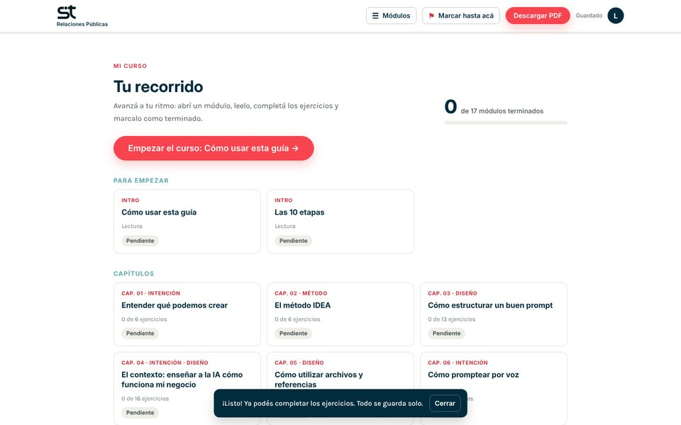
La guía que estás usando: la armamos con Claude, aplicando el método IDEA.
Lo que te llevás: Empezá por un problema chico y concreto de tu trabajo, no por “un sistema completo”.
El método IDEA
- Los cuatro componentes del método IDEA.
- La diferencia entre una instrucción vaga y una precisa.
- Cómo aplicar cada componente a tu proyecto.
IDEA es una forma de organizar el trabajo. No es un lenguaje de programación ni una función de Claude o Codex: es una lista ordenada de preguntas que te ayuda a no olvidar nada importante antes de pedir que se construya algo.
I · Intención
Definí qué problema querés resolver, para qué y cómo vas a saber que lo lograste. Si la intención no está clara, la IA va a completar los huecos con suposiciones.
| Instrucción vaga | Instrucción precisa |
|---|---|
| Haceme un sistema para mi negocio. | Tengo una pastelería. Hoy calculo los precios en una planilla y tardo 20 minutos por pedido. Quiero una herramienta que, al cargar los productos y las cantidades, me muestre el costo y el precio sugerido en menos de un minuto. |
Completá: “Hoy [cómo lo hago], eso me genera [problema]. Quiero [resultado] para [beneficio]”.
D · Diseño
Describí quién va a usar la herramienta, qué va a poder hacer, qué datos necesita y por qué pantallas pasa. No hace falta dibujar con precisión: alcanza con explicar el recorrido.
- Usuarios: quiénes la usan y qué rol tienen (dueña, empleado, cliente).
- Funciones: qué acciones permite (cargar, editar, buscar, exportar).
- Datos: qué información se guarda (nombre, fecha, precio, estado).
- Pantallas y recorrido: por dónde entra cada usuario y qué ve en cada paso.
| Instrucción vaga | Instrucción precisa |
|---|---|
| Que tenga una parte para clientes y otra para mí. | Hay dos usuarios. El cliente elige productos y ve el total, sin ver costos. Yo, como administradora, cargo insumos, edito precios y veo el margen de cada pedido. |
Anotá dos usuarios, tres funciones y cinco datos que tu herramienta necesita.
E · Ejecución
Establecé las reglas que el sistema debe respetar siempre. Acá aparecen las condiciones del negocio, las validaciones (comprobaciones automáticas antes de guardar un dato), los permisos y las conexiones con otras herramientas.
| Instrucción vaga | Instrucción precisa |
|---|---|
| Que no se puedan cargar cosas mal. | La cantidad debe ser un número entero mayor que cero. Un pedido no se puede guardar sin fecha de entrega. Solo la administradora puede modificar el margen. Si un insumo no tiene precio, mostrar un aviso y no calcular. |
Escribí tres reglas que tu herramienta nunca debe romper, con la forma “Siempre…” o “Nunca…”.
A · Aseguramiento
Definí cómo vas a comprobar que funciona. Los criterios de aceptación son condiciones verificables: si se cumplen, la función está lista; si no, hay que corregir.
| Instrucción vaga | Instrucción precisa |
|---|---|
| Fijate que ande bien. | Con 2 kg de harina a $1.000 el kilo y un recargo del 40 % sobre el costo (regla confirmada por la dueña), el precio sugerido debe dar $2.800. Si cargo cantidad 0, debe aparecer el mensaje “La cantidad debe ser mayor que cero”. |
Escribí dos criterios de aceptación con datos concretos: “Si hago X, debe pasar Y”.
Errores frecuentes
- Saltar de la intención a la construcción sin pasar por el diseño.
- Dejar las reglas “en la cabeza” y no escribirlas.
- Dar por buena una función porque “se ve bien”, sin probarla con datos.
El método IDEA aplicado a esta guía
Así quedó definida esta guía con los cuatro componentes:
- Intención: que alumnos sin conocimientos técnicos practiquen con su propio proyecto y que la docente pueda ver su avance. Una guía gratuita, con certificado.
- Diseño: dos tipos de usuario, alumno y docente. Ingreso con Google, ejercicios para completar y un módulo por pantalla, pensado para el celular.
- Ejecución: el avance cuenta solo cuando el alumno marca el módulo como terminado. El certificado se habilita con los 17 módulos. Cada alumno ve solo sus respuestas.
- Aseguramiento: cada cambio se probó en la compu y en el celular, con capturas antes de publicarlo.
Lo que nos costó más idas y vueltas fue lo que faltó en la Intención: al principio no dijimos que la guía era gratis, y el primer video de difusión salió invitando a inscribirse a un curso pago.
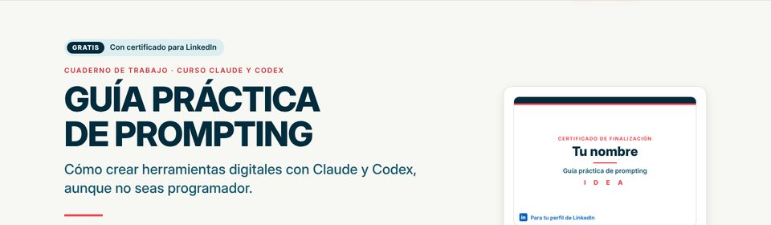
Resultado: la portada dice desde el primer momento que es gratis y con certificado.
Lo que te llevás: Escribí la Intención antes que nada: para quién es, qué resuelve y si es gratis o pago. Lo que falta ahí, aparece como error después.
Cómo estructurar un buen prompt
- Los once elementos que puede tener una instrucción.
- Cuándo usar todos y cuándo alcanza con pocos.
- Cómo completar la plantilla maestra.
Un prompt es la instrucción que le das a la IA. Cuanto más claro sea, menos tiene que adivinar. No todos los prompts necesitan todos los elementos: para una pregunta puntual alcanza con dos o tres. Para un proyecto que involucra datos, usuarios y reglas, conviene una definición completa.
| Elemento | Qué responde | Ejemplo breve |
|---|---|---|
| Rol | ¿Desde qué perspectiva debe trabajar la IA? | Actuá como analista funcional. |
| Contexto | ¿Qué tiene que saber de mi negocio? | Tengo un taller con 3 profesoras. |
| Problema | ¿Qué no funciona hoy? | Se superponen inscripciones. |
| Objetivo | ¿Qué quiero lograr? | Controlar cupos automáticamente. |
| Usuarios | ¿Quién la usa y con qué permisos? | Alumnas y administradora. |
| Funciones | ¿Qué debe permitir hacer? | Inscribirse, ver vacantes, cancelar. |
| Datos | ¿Qué información se guarda? | Nombre, correo, curso, fecha. |
| Reglas | ¿Qué condiciones se cumplen siempre? | Máximo 12 personas por grupo. |
| Restricciones | ¿Qué límites hay que respetar? | Sin costos mensuales; debe verse bien en el celular. |
| Resultado esperado | ¿Qué quiero recibir y en qué formato? | Una propuesta funcional en lista. |
| Criterios de aceptación | ¿Cómo sé que está bien? | La inscripción 13 pasa a lista de espera. |
Consulta simple (“¿qué es una base de datos?”): objetivo y resultado esperado.
Tarea acotada (“revisá esta fórmula”): contexto, objetivo, datos y resultado esperado.
Proyecto (“construí un turnero”): los once elementos, idealmente apoyados en una ficha de contexto (capítulo 4).
Plantilla maestra
Copiá esta estructura, reemplazá lo que está entre corchetes y borrá los bloques que no apliquen.
Plantilla rellenable
| Rol Ej.: analista funcional | |
| Contexto Ej.: centro de estética, 2 profesionales | |
| Problema Ej.: turnos superpuestos | |
| Objetivo | |
| Usuarios | |
| Funciones | |
| Datos | |
| Reglas | |
| Restricciones | |
| Resultado esperado | |
| Criterios de aceptación |
Errores frecuentes
- Escribir todo en un solo párrafo largo, sin separar elementos.
- Pedir el resultado sin decir en qué formato lo querés.
- Olvidar las restricciones: la IA puede proponer tecnologías con costo mensual.
- No invitar a la IA a preguntar cuando falta información.
| Enlace | [Agregar enlace del video] |
| Qué vas a aprender | A pasar de una idea a un prompt inicial usando la plantilla maestra. |
| Aplicá lo aprendido | Completá la plantilla rellenable con tu proyecto y registrala en el Laboratorio de prompts. |
El pedido de un video: vago y preciso
“¿Podés hacer un video en formato historia con motion graphics?”
El primer pedido dio un video prolijo, pero con un error grave: invitaba a inscribirse a un curso pago. En el capítulo 9 está cómo se corrigió. Con el prompt de abajo, ese error no hubiera existido.
Lo que te llevás: Antes de pedir, completá objetivo, público, mensaje y cómo vas a saber que está bien. Son cuatro líneas que te ahorran varias correcciones.
El contexto: enseñar a la IA cómo funciona mi negocio
- Por qué la IA no conoce tu negocio aunque “sepa mucho”.
- Cómo armar una ficha de contexto reutilizable.
- Cómo mantenerla actualizada entre conversaciones y sesiones.
La IA conoce mucha información general, pero no sabe cómo cotizás, qué clientes priorizás, qué herramientas usás ni qué excepciones aceptás. Si no se lo explicás, va a usar criterios genéricos que pueden no servirte.
La ficha de contexto es un documento breve que describe tu negocio y tu proyecto. La escribís una vez, la mejorás con el tiempo y la compartís al inicio de cada trabajo importante.
Sin contexto: “Armá un cotizador de eventos”. La IA propone precio por persona y un recargo por fin de semana, que quizás no apliques.
Con contexto: “Cobro un valor base por salón, más un adicional por cada hora extra después de las 4 horas. El catering lo cotiza un proveedor externo y yo sumo un porcentaje que defino en cada evento”. Ahora la propuesta respeta tu forma de trabajar.
Plantilla · Ficha de contexto
| Descripción del negocio Qué hacés, para quién, tamaño del equipo. | |
| Proceso actual Paso a paso, como lo hacés hoy. | |
| Problema | |
| Objetivo | |
| Herramientas utilizadas Planillas, CRM, mensajería, web. | |
| Información disponible Qué datos ya tenés y dónde están. | |
| Reglas de trabajo | |
| Usuarios y permisos | |
| Restricciones | |
| Resultado esperado | |
| Referencias disponibles | |
| Decisiones pendientes Lo que todavía no definiste. | |
| Versión y fecha |
Mantener el contexto vivo
- Actualizala cuando cambie algo importante: una regla nueva, un precio, un usuario. Anotá la fecha y qué cambió.
- Guardala como archivo: un documento de texto que puedas adjuntar o pegar al inicio de cada sesión.
- Usá archivos de instrucciones del proyecto cuando el entorno lo permita. Algunas herramientas leen un archivo con instrucciones permanentes ubicado en la carpeta del proyecto (por ejemplo, Claude Code usa CLAUDE.md y Codex usa AGENTS.md). Otras ofrecen “proyectos” con documentos persistentes. Verificá en la documentación vigente qué admite tu plan y tu entorno.
No todas las conversaciones ni todos los entornos conservan la información. Una conversación nueva puede empezar sin nada de lo que explicaste antes. Ante la duda, volvé a compartir la ficha de contexto.
Errores frecuentes
- Suponer que la IA “ya sabe” porque se lo contaste en otra conversación.
- Escribir el contexto con jerga interna sin explicarla.
- No registrar las decisiones pendientes: la IA las va a resolver por su cuenta.
La ficha de contexto de este proyecto
Cada vez que Claude retoma el trabajo sobre esta guía, lee primero un archivo con el contexto del proyecto. Es la misma idea que la ficha de este capítulo. Algunas líneas reales de ese archivo:
Los ids de las respuestas son estables: no renumerarlos.
Seguir los colores de ST: petróleo #012C3D y coral #F8444F.
Sin esa ficha, cada conversación empezaría de cero y la IA podría, por ejemplo, cambiar algo que borre las respuestas de los alumnos. Con la ficha, sabe qué no tocar.
Lo que te llevás: Escribí tu ficha de contexto una vez y pegala al empezar cada conversación sobre tu proyecto.
Cómo utilizar archivos y referencias
- Qué puede analizar la IA a partir de cada tipo de material.
- Qué no puede inferir con certeza.
- Cómo preparar y compartir referencias de forma segura.
Un archivo bien elegido vale más que muchas explicaciones. Pero cada material muestra solo una parte de la realidad: una captura de pantalla muestra cómo se ve una pantalla, no qué reglas hay detrás.
| Material | Qué se puede analizar | Qué no se puede inferir con certeza |
|---|---|---|
| Planillas | Columnas, fórmulas visibles, tipos de datos, cálculos. | Por qué se usa cada fórmula; excepciones que aplicás a mano. |
| Documentos | Procedimientos, políticas, condiciones comerciales. | Si siguen vigentes o se aplican en la práctica. |
| Capturas de pantalla | Campos, botones, organización visual, textos. | Qué pasa al hacer clic; validaciones; datos que no se ven. |
| Formularios | Preguntas, campos obligatorios, opciones. | Qué se hace con las respuestas después. |
| Sitios de referencia | Estructura, recorrido, funciones visibles. | Cómo funciona por dentro; costos; si es adecuado para tu caso. |
| CRM y plataformas | Etapas, campos, exportaciones, configuraciones visibles. | Automatizaciones ocultas, límites del plan, integraciones disponibles. |
| Ejemplos de datos | Formatos, casos habituales, problemas de calidad. | Casos raros que no aparecen en la muestra. |
| Código y documentación técnica | Estructura, funciones, dependencias, posibles errores. | Cómo se comporta en producción si no se ejecuta ni se prueba. |
Contraseñas, credenciales de acceso, claves privadas, claves de API, datos bancarios o información confidencial que no sea necesaria para la tarea. Si un archivo las contiene, eliminalas o reemplazalas por valores de ejemplo antes de compartirlo.
Lista de preparación de referencias
Errores frecuentes
- Compartir una planilla completa con datos reales de clientes cuando alcanzaba con diez filas de ejemplo.
- Enviar capturas sin explicar qué hay que mirar.
- Tomar como cierto lo que la IA “dedujo” de una imagen.
| Enlace | [Agregar enlace del video] |
| Qué vas a aprender | A pedir un análisis de una herramienta existente separando hechos, suposiciones y preguntas. |
| Aplicá lo aprendido | Prepará una referencia con la lista anterior y usá el prompt de auditoría. |
Listá tres materiales que podés compartir y qué esperás que la IA analice en cada uno.
El certificado: dos referencias y lo que no se podía adivinar
Para diseñar el certificado se compartieron dos materiales: un PDF con el modelo y una foto de la firma en papel.
- Lo que la IA pudo sacar de las referencias: el diseño, los colores, la ubicación de cada elemento y la firma, a la que se le quitó el fondo.
- Lo que no podía saber: el cargo exacto (“CEO & Founder de ST Relaciones Públicas® SAS”), el lugar (“Argentina”) ni la orientación de la firma. Esos datos hubo que darlos por escrito.
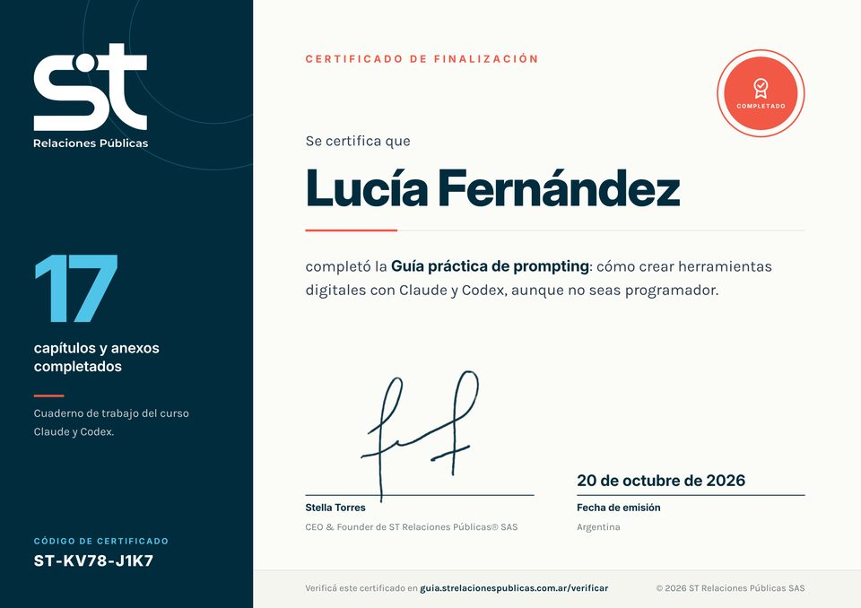
El certificado final, generado con el nombre de cada alumno, la fecha y un código único.
Lo que te llevás: Compartí referencias, pero escribí aparte lo que no se ve en ellas: nombres, cargos, reglas y excepciones.
Cómo promptear por voz
- A empezar un proyecto contando tu idea con tus propias palabras.
- Tres prompts listos para dictar.
- A completar la información faltante con preguntas sucesivas.
No hace falta tener todo claro para empezar. Muchas personas explican mejor hablando que escribiendo. Podés dictar tu idea tal como te sale, con desorden y repeticiones, y pedirle a la IA que la organice.
Según el dispositivo, podés usar el dictado del teclado del celular, el dictado del sistema operativo o el modo de voz de la aplicación, si está disponible en tu plan. El resultado es el mismo: texto que la IA puede procesar.
- Contá cómo trabajás hoy, como si se lo explicaras a alguien que empieza a trabajar con vos.
- Mencioná ejemplos reales: “la semana pasada me pasó que…”.
- No te preocupes por el orden: el prompt se encarga de eso.
- Revisá la transcripción antes de enviarla: los nombres y números suelen transcribirse mal.
Preguntas sucesivas
Después del primer ordenamiento, pedile a la IA que te entreviste. Así vas completando lo que falta sin tener que pensarlo todo de antemano.
Errores frecuentes
- Enviar la transcripción sin revisarla.
- Pedir que construya directamente a partir de un audio desordenado.
- Responder “lo que te parezca” a preguntas sobre reglas del negocio.
| Enlace | [Agregar enlace del video] |
| Qué vas a aprender | A dictar una idea y convertirla en una especificación funcional con preguntas sucesivas. |
| Aplicá lo aprendido | Completá el registro de esta página con tu propio proyecto. |
Esta guía empezó con un audio
El primer pedido de esta guía fue un audio dictado, con desorden y repeticiones:
De ese audio salieron cuatro funciones concretas: ingreso con Google, seguimiento del avance, ejercicios editables y botones para copiar prompts. Lo que el audio no decía, como el certificado o la vista de curso, se fue completando después con preguntas.
Lo que te llevás: Si te cuesta escribir, dictá. Pero después revisá qué quedó afuera y completalo.
Cómo trabajar con Claude y Codex
- Para qué tipo de tareas conviene usar cada herramienta.
- El ciclo de siete pasos para trabajar por etapas.
- Prompts específicos para cada paso.
Claude y Codex pueden ayudarte a analizar requisitos, leer archivos, planificar cambios, escribir código y revisarlo. Lo que pueden hacer en concreto depende del producto, el plan y el entorno: no es lo mismo una conversación en el navegador que un asistente con acceso a la carpeta de tu proyecto o a una terminal.
¿Puede leer archivos? ¿Puede crear o modificar archivos en tu computadora? ¿Puede ejecutar código y pruebas? ¿Conserva información entre sesiones? Las respuestas cambian según la versión. Revisá la documentación oficial y, ante la duda, preguntale a la propia herramienta qué puede hacer en ese entorno.
El ciclo de trabajo por etapas
Pedir “hacé todo” suele producir resultados difíciles de revisar. Trabajar por etapas te permite controlar cada paso y detectar errores a tiempo.
El paso 3 es tuyo: nada se construye hasta que vos apruebes el plan.
Errores frecuentes
- Saltear la aprobación y dejar que implemente todo de una vez.
- Aceptar que “ya está probado” sin ver qué pruebas se hicieron.
- No pedir la lista de archivos modificados.
| Enlace | [Agregar enlace del video] |
| Qué vas a aprender | A recorrer el ciclo analizar–planificar–aprobar–implementar sobre un proyecto real. |
| Aplicá lo aprendido | Pedí un plan por etapas para tu proyecto y anotalo en el plan de desarrollo del capítulo 12. |
Cómo pasamos de una página larga a un curso
- Analizar: “¿Se puede armar la guía como un LMS? La veo larga y compleja para el usuario.”
- Planificar: la IA propuso un inicio “Mi curso” con el avance, un módulo por pantalla y botones de anterior y siguiente, sin tocar lo que ya funcionaba.
- Aprobar: la respuesta fue “Dale”. Nada se construyó antes de ese paso.
- Implementar y probar: se armó y se probó en compu y celular.
- Revisar: llegaron capturas antes de publicar. Con ellas se decidió achicar la portada, porque tapaba el inicio del curso.
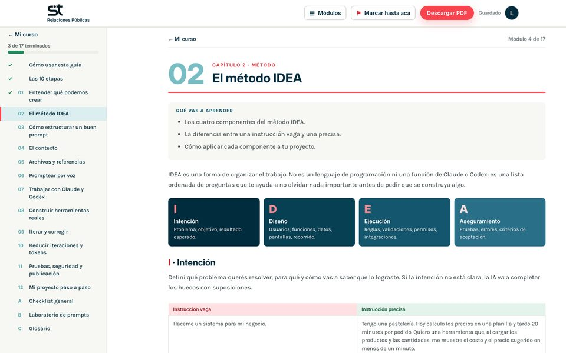
El resultado: un módulo por pantalla, con el menú de módulos al costado.
Lo que te llevás: No dejes que la IA construya antes de que apruebes el plan. Y pedí capturas antes de publicar.
De pedirle cosas a la IA a delegarle tareas
Anthropic presentó Claude Duet, un agente proactivo: una IA que trabaja sola, en segundo plano.
Le pedís una cosa por vez y te responde.
Le dejás instrucciones y trabaja sola, aunque cierres la app.
- Revisatu correo, tu calendario y tus ventas.
- Te avisalo que necesita tu atención.
- Te pide permisoantes de actuar en tu nombre.
- Vista previa
- Solo Estados Unidos
- Planes pagos
Con lo mismo que practicás en esta guía: contexto claro, reglas y qué puede hacer sola.
Es una novedad: sus funciones y su disponibilidad pueden cambiar. Verificá la información oficial antes de usarla.
Cómo construir herramientas reales
- A aplicar el método completo en cuatro casos frecuentes.
- Qué preguntar, qué reglas definir y cómo probar cada herramienta.
- A adaptar un caso modelo a tu negocio.
Los cuatro casos son didácticos: los datos y las reglas son ejemplos. Cada caso sigue la misma estructura para que puedas compararlos y elegir el más cercano a tu proyecto.
La IA no debe inventar fórmulas comerciales, criterios fiscales, políticas de cancelación ni condiciones legales. Todas esas reglas tienen que salir de vos o de un profesional que las valide.
Sistema de costos y cotizador
| Problema inicial | Un taller de carpintería cotiza muebles a mano. Cada presupuesto tarda y dos personas pueden dar precios distintos para el mismo trabajo. |
| Contexto que necesita la IA | Lista de materiales y precios, cómo se calculan las horas de trabajo, gastos fijos, criterio de margen, impuestos que se suman (confirmados por el contador), formato del presupuesto actual. |
| Preguntas que deben responderse | ¿El margen se calcula sobre el costo o sobre el precio de venta? ¿Cómo se reparten los gastos fijos? ¿Se redondean los precios? ¿Quién actualiza los precios de materiales y cada cuánto? ¿Cuánto tiempo es válido un presupuesto? |
| Resultado funcional esperado | Pantalla para elegir producto, medidas y materiales; cálculo de costo directo, gastos asignados, margen y precio final; presupuesto descargable; listado de materiales editable solo por administración. |
| Reglas principales | Las fórmulas son las documentadas y aprobadas por el usuario. Ningún material sin precio entra al cálculo. Las cantidades deben ser mayores que cero. Cada presupuesto guarda los precios vigentes al momento de emitirlo. Solo administración modifica precios y márgenes. |
| Caso de prueba | Resultado esperado |
|---|---|
| Producto con el ejemplo resuelto aprobado | El precio coincide exactamente con el cálculo manual. |
| Cantidad igual a cero o negativa | No calcula y muestra un mensaje claro. |
| Material sin precio cargado | Aviso de material incompleto; no emite presupuesto. |
| Cambio de precio de un material | Los presupuestos anteriores conservan el precio original. |
| Usuario sin permiso intenta editar el margen | La acción se bloquea, también desde el servidor. |
Errores frecuentes: confundir margen sobre costo con margen sobre precio; redondear en pasos intermedios; dejar que la IA “estime” impuestos; no guardar la versión de precios de cada presupuesto.
¿Qué cotizás? ¿Cuáles son tus variables? Escribí tu fórmula como la aplicás hoy.
Agenda de turnos a medida
| Problema inicial | Un centro de estética con dos profesionales agenda por mensaje. Hay turnos superpuestos, olvidos y cancelaciones de último momento. |
| Contexto que necesita la IA | Servicios y duración de cada uno, tiempo de preparación entre turnos, horarios por profesional, días no laborables, política de modificación y cancelación, si se cobra seña, canales de aviso. |
| Preguntas que deben responderse | ¿El cliente elige profesional o se asigna? ¿Con cuánta anticipación se puede reservar o cancelar? ¿Qué pasa con la seña si cancela? ¿Hay servicios que requieren una cabina o equipo específico? ¿Qué zona horaria se usa? |
| Resultado funcional esperado | Vista de horarios libres por servicio y profesional; reserva con datos mínimos del cliente; modificación y cancelación según política; registro de seña; avisos de confirmación y recordatorio; vista diaria para el equipo. |
| Reglas principales | Un turno ocupa la duración del servicio más el tiempo de preparación. Dos turnos de la misma profesional no pueden solaparse. La disponibilidad se vuelve a validar al confirmar y al modificar, no solo al mostrar horarios. Un turno cancelado libera el horario. Fuera del plazo de cancelación, se aplica la política definida por el negocio. |
| Caso de prueba | Resultado esperado |
|---|---|
| Turno de 60 min a las 10:00 y otro a las 10:30 con la misma profesional | El segundo se rechaza por solapamiento. |
| Turno que termina a las 11:00 con 15 min de preparación | El siguiente disponible es a las 11:15. |
| Dos personas reservan el mismo horario al mismo tiempo | Solo una reserva se confirma. |
| Modificar un turno a un horario ocupado | Se rechaza y el turno original se mantiene. |
| Cancelar fuera de plazo | Se aplica la política definida y queda registrado. |
Errores frecuentes: validar disponibilidad solo en la pantalla; olvidar el tiempo de preparación; no contemplar feriados; prometer avisos por mensajería sin revisar costos y requisitos del proveedor.
Listá tus servicios con su duración y tu política de cancelación.
CRM adaptado a un negocio
| Problema inicial | Una consultora de comunicación sigue a sus clientes en planillas, correos y notas sueltas. Se pierden briefs, cambios pedidos y decisiones acordadas. |
| Contexto que necesita la IA | Etapas comerciales reales (contacto, reunión, propuesta, negociación, cliente activo, cerrado), datos de la ficha de cliente, cómo se evalúa una oportunidad, estructura del brief, roles del equipo. |
| Preguntas que deben responderse | ¿Qué dato identifica a un cliente de forma única? ¿Quién puede ver información económica? ¿Cuándo una oportunidad cambia de etapa? ¿Qué se registra en el historial? ¿Cuánto tiempo se conservan los datos? |
| Resultado funcional esperado | Fichas de clientes y contactos; tablero de oportunidades por etapa; evaluación de cada oportunidad; briefs vinculados; registro de modificaciones solicitadas; tareas con responsable y fecha; historial de decisiones con autor y fecha. |
| Reglas principales | Antes de crear un cliente se buscan coincidencias (por ejemplo, CUIT o correo) y se avisa si existe. Cada cambio de etapa queda en el historial. Las decisiones no se borran: se corrigen con una nueva entrada. Los permisos se controlan en el servidor. Solo se guardan los datos personales necesarios, con acceso restringido. |
| Caso de prueba | Resultado esperado |
|---|---|
| Crear un cliente con un CUIT ya registrado | Aviso de posible duplicado con enlace al registro existente. |
| Mover una oportunidad de “Propuesta” a “Negociación” | Queda registrado quién, cuándo y desde qué etapa. |
| Usuario sin rol comercial abre montos de una propuesta | Acceso denegado. |
| Intentar borrar una decisión del historial | No se permite; se ofrece agregar una corrección. |
Errores frecuentes: copiar las etapas de un CRM genérico; ocultar botones sin bloquear permisos en el servidor; guardar datos personales “por las dudas”; no definir qué pasa con clientes duplicados ya existentes.
Escribí tus etapas comerciales y qué condición marca el paso de una a otra.
Directorio digital
| Problema inicial | Una red de emprendedoras tiene un listado en una planilla compartida. Está desactualizado, no se puede buscar por rubro y cualquiera puede modificarlo. |
| Contexto que necesita la IA | Campos de cada ficha, categorías y subcategorías, filtros necesarios, quién carga y quién aprueba, qué datos son públicos y cuáles privados, frecuencia de actualización. |
| Preguntas que deben responderse | ¿Cada integrante edita su propia ficha? ¿Los cambios requieren aprobación? ¿Qué pasa con fichas sin actualizar en un año? ¿Se pueden tener varias categorías? ¿Hay consentimiento para publicar los datos? |
| Resultado funcional esperado | Página pública con buscador y filtros; fichas con datos públicos; panel privado para que cada integrante edite su ficha; cola de aprobación para administración; aviso de fichas desactualizadas. |
| Reglas principales | Solo se publican fichas aprobadas. Los datos privados nunca se envían a la página pública. Cada integrante edita solo su propia ficha. Los cambios en campos sensibles vuelven a aprobación. Se registra fecha de última actualización. |
| Caso de prueba | Resultado esperado |
|---|---|
| Ficha nueva sin aprobar | No aparece en la búsqueda pública. |
| Filtrar por dos categorías | Muestra solo las fichas que cumplen el criterio acordado. |
| Integrante intenta editar una ficha ajena | Acceso denegado. |
| Revisar el código de la página pública | No contiene teléfonos ni correos marcados como privados. |
Errores frecuentes: ocultar datos privados con diseño pero enviarlos igual al navegador; no definir si los filtros suman o restringen; publicar datos sin consentimiento; no prever qué hacer con fichas abandonadas.
¿Qué datos de tu directorio serían públicos y cuáles privados?
El cotizador de ST
Problema: armar cada presupuesto llevaba tiempo, y calcular el dólar y el margen a mano daba lugar a errores.
Lo que hace: se elige el cliente, los servicios y la complejidad, y calcula el total en pesos y dólares al instante. Muestra el margen interno, con el costo de cada proveedor, que el cliente nunca ve. Exporta el presupuesto en PDF y guarda la ficha de cada cliente con notas de seguimiento.
La regla más importante la puso la dueña del negocio, no la IA: si cambia el dólar, un presupuesto que ya se mandó no se recalcula. Ese criterio no lo sabe ningún programador; lo sabe quien conoce el negocio.
Tiempo: dos días. La mitad del segundo día se fue en resolver problemas para publicarlo.
Lo que te llevás: la IA programa, pero las reglas de tu negocio las tenés que escribir vos. Es lo único que nadie puede adivinar.
Mi Capital Conecta: una plataforma pública
Problema: en San Fernando del Valle de Catamarca, conseguir un electricista, un gasista o un plomero era buscar en 20 grupos distintos, contratar sin referencias y no tener idea del presupuesto. Y los trabajadores de oficio no tenían dónde mostrarse.
Lo que se construyó con IA, sin programar: la plataforma de la Municipalidad de la Capital que conecta a vecinos, comercios y PyMEs con trabajadores de oficio. Tiene dos caminos (“soy vecino/a” y “soy trabajador/a”), un formulario por pasos que empieza eligiendo el rubro, preguntas frecuentes y consultas por WhatsApp.
El criterio lo puso quien conoce el municipio: los pedidos se gestionan a través del portal oficial de la Municipalidad, para proteger los datos de los vecinos, y cada trabajador se verifica con su documentación. Son reglas del negocio, no decisiones técnicas.
La difusión: “Comentá MCC y te enviamos el acceso”, la misma mecánica que usamos después para esta guía. Un método que funciona se reutiliza.
La página de inicio, con los dos caminos: vecino o trabajador.
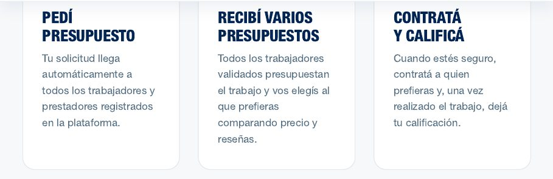
El recorrido en tres pasos: pedí presupuesto, recibí varios y contratá.
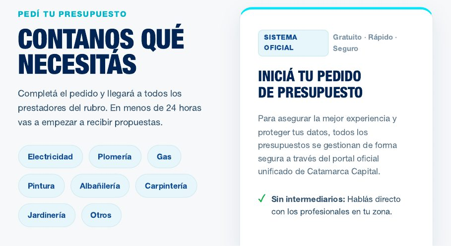
El pedido de presupuesto: se elige el rubro y el pedido sigue por el portal oficial.
Lo que te llevás: si tu herramienta la usa gente de afuera, pensá desde el principio cómo vas a cuidar sus datos y cómo vas a verificar a quienes ofrecen algo.
Cómo iterar un prompt y corregir resultados
- Un procedimiento de siete pasos para corregir sin empezar de cero.
- A detectar si falta contexto, una regla o una instrucción.
- A pedir cambios específicos que no rompan lo que ya funciona.
La primera respuesta casi nunca es la definitiva. Iterar es parte del trabajo, no una señal de que lo hiciste mal. Lo importante es que cada corrección te acerque al objetivo y no genere errores nuevos.
- Compará el resultado con el objetivo y los criterios de aceptación.
- Identificá la diferencia concreta: qué esperabas y qué obtuviste.
- Determiná la causa: ¿faltó contexto, una regla o una instrucción clara?
- Pedí un cambio específico, con un ejemplo si es posible.
- Protegé lo que funciona: indicá qué no se debe modificar.
- Volvé a probar con los mismos casos que fallaron, y con los que ya funcionaban.
- Documentá la versión validada en tu laboratorio de prompts.
| Enlace | [Agregar enlace del video] |
| Qué vas a aprender | A comparar una respuesta con el objetivo y encontrar qué falta (pasos 1 a 3). |
| Aplicá lo aprendido | Tomá una respuesta propia y completá los pasos 1 a 3 en el registro de iteraciones. |
Ejemplo comparativo
| 1. Primera instrucción | “Agregá a mi agenda la posibilidad de cancelar turnos”. |
| 2. Respuesta incompleta | Se agregó un botón “Cancelar” que borra el turno. No hay plazo mínimo, no queda registro y no se libera la seña según la política. |
| Diagnóstico | Faltaron reglas: plazo, qué pasa con la seña y que el turno no se borre sino que cambie de estado. |
| 3. Iteración | “La cancelación funciona, pero necesito tres ajustes, sin modificar la reserva ni la vista diaria: (a) el turno no se borra, pasa a estado ‘Cancelado’ con fecha y quién canceló; (b) si faltan menos de 24 horas, mostrar aviso de que la seña no se reintegra; (c) el horario queda libre para nuevas reservas. Mostrame los archivos que cambiás y proponé pruebas para los tres puntos”. |
| 4. Resultado esperado | Turno cancelado con historial, aviso según plazo, horario disponible y pruebas superadas para los tres casos. La reserva sigue funcionando como antes. |
| Enlace | [Agregar enlace del video] |
| Qué vas a aprender | A escribir una iteración específica y validar el resultado (pasos 4 a 7). |
| Aplicá lo aprendido | Usá el prompt de corrección puntual y registrá la versión final en el Laboratorio de prompts. |
Errores frecuentes
- Responder “no funciona, arreglalo” sin explicar qué esperabas.
- Pedir varias correcciones distintas en el mismo mensaje.
- Probar solo lo que se corrigió y no lo que ya funcionaba.
- No guardar la versión del prompt que finalmente dio resultado.
El video que salió mal
Primera instrucción: “Hacé un video para historias con motion graphics.” Resultado: un video prolijo que cerraba con “Inscripciones abiertas”, como si la guía fuera paga.
Diagnóstico: faltó contexto. Nunca se había dicho que la guía era gratis.
Iteración 1: “Recordá que es una guía gratuita, con certificado.” Iteración 2: “No pongas ‘tocá el link’, sino ‘comentá GUÍA y te mandamos el acceso’.” En esa vuelta la IA señaló algo que nadie había visto: en las historias no hay comentarios. Se hicieron dos versiones.
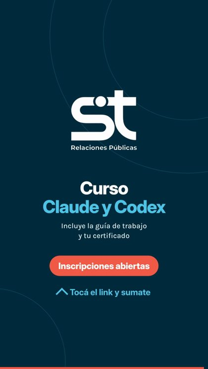
Antes: invitaba a inscribirse.
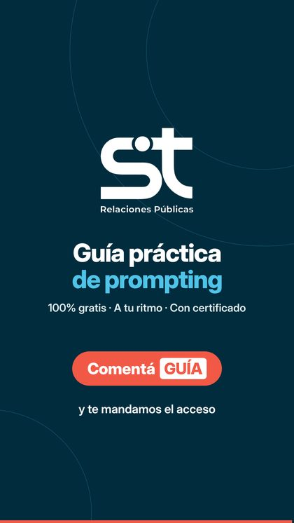
Después: gratis y “Comentá GUÍA”.
Lo que te llevás: Antes de corregir, preguntate qué faltó: contexto, una regla o una instrucción. La corrección es darle eso.
Cómo reducir iteraciones innecesarias y optimizar tokens
- Qué son los tokens, en términos sencillos.
- Por qué optimizar no significa escribir siempre menos.
- Ocho hábitos para trabajar con menos idas y vueltas.
- Cómo preparar el contexto una sola vez, qué archivos compartir y cómo medir tus propias vueltas.
Los tokens son los fragmentos en que la IA divide el texto para procesarlo: pueden ser palabras completas, partes de palabras o signos. Todo cuenta: lo que escribís, los archivos que compartís, el historial de la conversación y lo que la IA responde. Según el plan, los tokens se relacionan con límites de uso o con costos.
Optimizar no es escribir prompts cortos. Un prompt largo y claro puede ahorrar cinco correcciones. Lo que se busca es evitar ambigüedades, información irrelevante, repeticiones y errores que se podían prever.
| Hábito | Cómo aplicarlo |
|---|---|
| Compartir el contexto relevante desde el principio | Empezá con la ficha de contexto en lugar de ir agregando datos a medida que aparecen errores. |
| Usar documentos de requisitos | Un documento con funciones, reglas y criterios evita repetir lo mismo en cada mensaje. |
| Pedir una tarea concreta por etapa | “Implementá la etapa 2” en lugar de “hacé todo el sistema”. |
| No pedir una reconstrucción ante un error puntual | Corregí lo que falla y protegé lo que funciona (capítulo 9). |
| No pedir información innecesaria | Si no vas a leer una explicación extensa, pedí un resumen o solo la lista de cambios. |
| Mantener instrucciones de proyecto | Si el entorno lo permite, guardá las reglas permanentes en un archivo de instrucciones o en la configuración del proyecto. |
| Definir el formato de respuesta | “Respondé en una tabla con tres columnas” o “máximo diez puntos”. |
| Pedir aclaraciones cuando falten decisiones | Es más barato responder una pregunta que deshacer una suposición equivocada. |
Cada herramienta, modelo y plan maneja los tokens de forma distinta. Estas prácticas ayudan a trabajar con más orden, pero no garantizan un ahorro determinado ni resultados idénticos en todas las herramientas.
El archivo de contexto del proyecto
La ficha de contexto del capítulo 4 describe tu negocio. Cuando el proyecto avanza, conviene sumarle el estado del proyecto: qué ya está hecho, qué decisiones se tomaron, qué reglas se acordaron y qué no se debe tocar. Así no tenés que volver a explicarlo en cada conversación.
Guardalo como un documento aparte y actualizalo al terminar cada etapa. Según la herramienta, se puede cargar solo: en un proyecto de Claude va en las instrucciones o en los archivos del proyecto; Claude Code lee un archivo CLAUDE.md y Codex lee AGENTS.md. Si tu herramienta no tiene nada de eso, pegalo al inicio de la conversación.
El resumen de sesión (el prompt de arriba) sirve para retomar mañana. El archivo de contexto es permanente: lo que cualquier conversación nueva tiene que saber desde el primer mensaje. Al cerrar una sesión, pasá al archivo lo que haya cambiado.
Qué compartir y qué no
Más archivos no es más contexto: es más texto para procesar y más chances de que la IA toque algo que no tenía que tocar. Compartí lo que hace falta para esta tarea.
| Compartí | Evitá |
|---|---|
| El archivo o la pantalla que hay que cambiar. | El proyecto entero cuando el cambio es en una sola pantalla. |
| El mensaje de error completo, copiado tal cual. | “No anda” o una descripción de memoria. |
| Una captura de lo que ves. | Versiones viejas del mismo archivo, que confunden cuál vale. |
| El archivo de contexto o el resumen de la sesión anterior. | Conversaciones anteriores completas pegadas enteras. |
| Datos de ejemplo que se parezcan a los reales. | Datos personales reales, contraseñas o claves de acceso. Nunca. |
Un pedido, un problema
El hábito “una tarea concreta por etapa” también vale para corregir. Compará:
El formulario no anda, arreglalo.
En el formulario de inscripción, al tocar “Enviar” no pasa nada. Te pego el error que aparece. Revisá solo esa pantalla y no cambies el diseño. Primero decime la causa probable y después proponé el cambio.
El primero invita a la IA a revisar y rehacer todo. El segundo marca dónde mirar, qué proteger y en qué orden responder.
Algunas herramientas permiten guardar instrucciones que se usan solo cuando hacen falta. En Claude se llaman Skills: un paquete con instrucciones, y a veces archivos de apoyo, para una tarea que repetís con las mismas reglas (tu tono de marca, cómo armás un informe, cómo revisás un formulario).
Para trabajar con menos idas y vueltas tienen dos ventajas: no hace falta pegar las mismas reglas en cada conversación, y mientras no se usan ocupan muy poco, porque la herramienta lee primero solo el nombre y una descripción breve.
La disponibilidad cambia según la herramienta y el plan. Revisalo en la documentación oficial antes de contar con ellas.
Elegí una tarea chica y real, por ejemplo el texto de bienvenida de un formulario. Hacela dos veces, cada una en una conversación nueva:
- Versión A: con el prompt como te sale.
- Versión B: con la ficha de contexto, una tarea concreta y el formato de respuesta definido.
Contá cuántos mensajes necesitaste hasta tener un resultado que te sirva. Si tu herramienta muestra el uso de la conversación, anotalo también; si no, el número de mensajes alcanza. No hace falta que B gane: lo que importa es ver qué cambió.
| Prompt inicial | Mensajes hasta un resultado útil | Qué tuviste que corregir | |
|---|---|---|---|
| A | |||
| B |
Siete pedidos para un certificado
El certificado se terminó después de siete pedidos separados: el modelo, una firma estilo garabato, la firma real, el cargo, el lugar, ponerla horizontal y rotarla.
Con todos esos datos en un solo mensaje (modelo, foto de la firma, cargo, lugar y orientación), hubiera salido en uno o dos. Cada dato que se agrega tarde cuesta una vuelta más, y más tokens.
Lo que te llevás: Juntá todos los datos de una pieza en un solo mensaje. Cada dato que llega tarde es una vuelta más.
Pruebas, seguridad y publicación
- Cómo comprobar que una herramienta funciona antes de usarla con información real.
- La diferencia entre una prueba propuesta, una ejecutada y un resultado verificado.
- Qué revisar antes de publicar.
Que la IA genere código no garantiza que sea seguro, correcto ni apto para producción. Si la herramienta va a manejar datos personales, pagos o información sensible, pedí la revisión de un profesional antes de publicarla.
Propuesta, ejecución y verificación
| Tipo | Qué significa | ¿Alcanza para publicar? |
|---|---|---|
| Prueba propuesta | La IA describe qué habría que probar. | No. Es solo un plan. |
| Prueba ejecutada | La prueba se corrió y hay un resultado registrado. | Todavía no: falta comparar con lo esperado. |
| Resultado verificado | Vos (u otra persona) comprobaste que el resultado coincide con el criterio de aceptación. | Sí, para esa función. |
Probá siempre tres tipos de casos: normales (el uso habitual), errores (datos incorrectos o faltantes) y límites (el último cupo, el último minuto del día, el valor máximo). Usá datos de prueba, nunca datos reales de clientes.
Lista de control antes de publicar
| Aspecto | Qué comprobar | Observaciones | |
|---|---|---|---|
| Datos y almacenamiento | Dónde se guardan, quién accede, si persisten al recargar. | ||
| Fórmulas y cálculos | Coinciden con ejemplos resueltos a mano. | ||
| Campos obligatorios | No se puede guardar sin ellos. | ||
| Errores y mensajes | Son claros y no muestran información técnica interna. | ||
| Permisos | Cada rol ve y hace solo lo que le corresponde. | ||
| Validaciones en el servidor | Las reglas se controlan también en el servidor, no solo en la pantalla. | ||
| Integraciones | Qué pasa si el servicio externo falla o tarda. | ||
| Copias de respaldo | Existen, son periódicas y probaste restaurar una. | ||
| Credenciales y variables de entorno | Las claves no están escritas en el código; se guardan como variables de entorno (valores de configuración fuera del código). | ||
| Costos de funcionamiento | Alojamiento, base de datos, dominio, envíos de mensajes, servicios externos. | ||
| Configuración de producción | Modo de depuración desactivado, conexión segura (HTTPS), datos de prueba eliminados. |
| Enlace | [Agregar enlace del video] |
| Qué vas a aprender | A pasar de una prueba propuesta a un resultado verificado. |
| Aplicá lo aprendido | Completá el checklist de pruebas y el registro de errores del capítulo 12. |
Errores frecuentes
- Probar con datos reales de clientes.
- Pegar una clave de acceso en el chat para “que lo configure”.
- Publicar sin saber cuánto va a costar mantener la herramienta funcionando.
- Dar por verificada una prueba que solo fue propuesta.
Una letra mayúscula que frenó la publicación
Al mudar esta guía a otro servidor, la publicación falló. En lugar de probar cosas al azar, se leyó el registro de errores. Decía:
La carpeta se llama “site”, en minúscula. Un carácter. Se corrigió y se publicó, pero eso era solo una prueba ejecutada. Para tener un resultado verificado faltaba comprobar que el ingreso con Google funcionara, que las respuestas se guardaran y que el certificado se pudiera verificar.
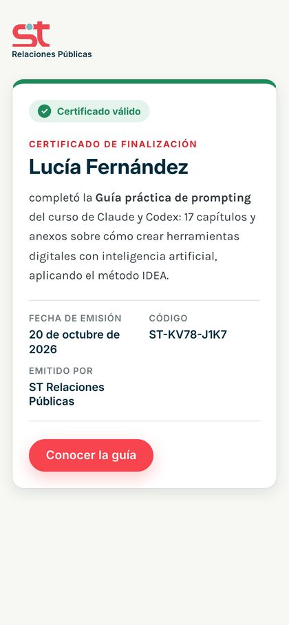
La verificación pública: cualquiera confirma con el código que un certificado es real.
Lo que te llevás: Cuando algo falle, leé el mensaje de error antes de probar cosas al azar. Y no des por terminado algo que no verificaste vos.
El directorio de la RAE: funcionar no es lo mismo que ser seguro
Para la Red de Articulación Emprendedora (RAE) se construyó un directorio digital con 90 referentes y 46 instituciones. Tiene buscador por persona, institución, localidad o sector, filtros, un perfil para cada integrante y contacto directo por WhatsApp.
Un directorio así guarda datos de personas reales: nombres, cargos y contactos. Por eso no alcanza con que funcione. Hay que definir quién puede ver y quién puede editar cada dato, y eso no se nota mirando la página: se ve igual con reglas o sin ellas.
Los servicios donde se guardan los datos avisan cuando algo queda abierto. Supabase, por ejemplo, manda un aviso si una tabla está pública, sin reglas de acceso (las llama RLS): cualquiera con la dirección podría leer, cambiar o borrar los datos. Esos avisos hay que leerlos y resolverlos antes de difundir la herramienta. La regla habitual: todos pueden ver el directorio, pero cada persona solo edita su propio perfil.
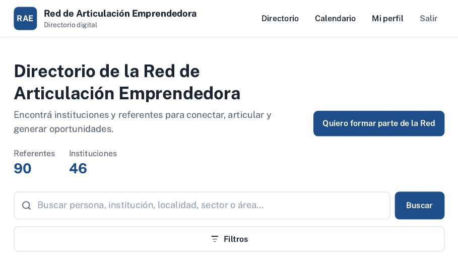
El inicio del directorio, con el buscador y los filtros.
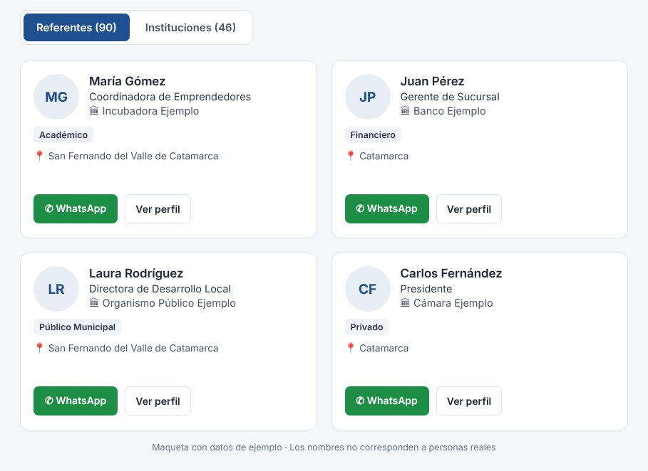
Maqueta de las fichas con datos de ejemplo. Mostrar una herramienta también exige cuidar los datos de quienes están adentro, por eso acá no aparecen las personas reales de la Red.
Lo que te llevás: si tu herramienta guarda datos de personas, pedí una revisión de seguridad antes de publicarla y leé los avisos de los servicios que usás. Que funcione no significa que sea seguro.
Mi proyecto paso a paso
Estas fichas reúnen todo lo que trabajaste en la guía. Completalas en orden la primera vez y volvé a ellas cada vez que el proyecto cambie. Si trabajás en digital, podés pegar textos directamente en cada espacio o copiar la estructura a tu propio documento.
1 · Ficha de idea
| Nombre del proyecto | |
| Problema que resuelve | |
| Quién lo sufre hoy | |
| Resultado esperado | |
| Tipo (módulo / conexión / automatización / herramienta nueva) | |
| Cómo sabré que funcionó |
2 · Ficha de contexto
Usá la plantilla del capítulo 4. Registrá acá las versiones para saber cuál es la vigente.
| Versión | Fecha | Qué cambió | Dónde está guardada |
|---|---|---|---|
3 · Inventario de herramientas actuales
| Herramienta | Para qué la uso | Quién la usa | ¿Se mantiene, se conecta o se reemplaza? |
|---|---|---|---|
4 · Inventario de archivos y referencias
| Archivo o referencia | Qué debe analizar la IA | ¿Anonimizado? | ¿Puedo compartirlo? |
|---|---|---|---|
5 · Mapa del proceso actual
Describí cada paso como ocurre hoy. Marcá dónde se pierde tiempo o aparecen errores.
| Paso | Qué pasa | Quién | Con qué | Problema detectado |
|---|---|---|---|---|
| 1 | ||||
| 2 | ||||
| 3 | ||||
| 4 | ||||
| 5 | ||||
| 6 |
6 · Lista de requisitos
| Requisito (la herramienta debe…) | Usuario | Prioridad (alta / media / baja) | Criterio de aceptación |
|---|---|---|---|
7 · Reglas de negocio
| Regla (siempre / nunca / si… entonces…) | Ejemplo con datos | Confirmada por |
|---|---|---|
8 · Decisiones pendientes
| Decisión | Opciones | Afecta a | Decidido (fecha) |
|---|---|---|---|
9 · Plan de desarrollo
| Etapa | Qué se construye | Cómo se prueba | Estado |
|---|---|---|---|
| 1 | |||
| 2 | |||
| 3 | |||
| 4 | |||
| 5 |
10 · Registro de prompts
Índice rápido de tus prompts. El detalle de cada uno va en el Laboratorio personal de prompts.
| Fecha | Nombre del prompt | Etapa | ¿Validado? |
|---|---|---|---|
11 · Registro de iteraciones
| N.º | Diferencia detectada | Causa (contexto / regla / instrucción) | Cambio pedido y resultado |
|---|---|---|---|
| 1 | |||
| 2 | |||
| 3 | |||
| 4 |
12 · Checklist de pruebas
| Caso de prueba | Tipo (normal / error / límite) | Resultado esperado | Estado (propuesta / ejecutada / verificada) |
|---|---|---|---|
13 · Registro de errores
| Fecha | Qué pasó y cómo reproducirlo | Gravedad | Solución y verificación |
|---|---|---|---|
14 · Lista de mejoras futuras
| Mejora | Por qué sería útil | Prioridad |
|---|---|---|
15 · Evaluación final del proyecto
Esta ficha es tu entrega: lo que cualquier persona necesita saber para entender qué construiste, qué está probado y qué falta. Escribí solo lo que puedas respaldar con una prueba de la ficha 12.
Nivel A · Idea documentada. El problema, el contexto y los requisitos están definidos (fichas 1 a 8). Todavía no hay nada construido, o solo bocetos.
Nivel B · Prototipo navegable. Se puede recorrer y algunas funciones andan, aunque falten partes o use datos de ejemplo.
Nivel C · Herramienta funcional. Superó las pruebas que definiste en la ficha 12: normales, de error y de límite.
Los tres niveles son válidos: una idea bien documentada vale más que una aplicación que nadie probó. Para usarla con personas y datos reales, sumá lo del capítulo 11: seguridad, mantenimiento y costos. El nivel es para ordenar tu próximo paso; no cambia las condiciones del certificado.
| Enlace o ubicación de la herramienta | |
| Funciones que funcionan y fueron probadas | |
| Errores conocidos que siguen pendientes | |
| Limitaciones y riesgos (datos personales, seguridad, servicios de los que depende) | |
| Nivel alcanzado (A, B o C) y por qué | |
| ¿La herramienta resuelve el problema inicial? ¿En qué medida? | |
| ¿Se cumplieron los criterios de aceptación? | |
| Qué funcionó mejor del método | |
| Qué haría distinto en el próximo proyecto | |
| Quién mantiene la herramienta y cada cuánto se revisa | |
| Costos recurrentes identificados | |
| Próximo paso |
Checklist general del proyecto
Reutilizable para cada proyecto. Marcá cada ítem y registrá el estado de la etapa: pendiente, en curso o completa.
| Etapa | Ítems | Estado | Observaciones |
|---|---|---|---|
| 1. Definir | |||
| 2. Contextualizar | |||
| 3. Especificar | |||
| 4. Planificar | |||
| 5. Construir | |||
| 6. Validar | |||
| 7. Publicar |
Laboratorio personal de prompts
Una ficha por prompt importante. El objetivo no es acumular prompts, sino entender qué funcionó, por qué, y qué aprendiste para el próximo proyecto. Imprimí o duplicá esta ficha las veces que necesites.
| Nombre del prompt | |
| Proyecto | |
| Etapa | |
| Objetivo | |
| Contexto utilizado | |
| Archivos o referencias | |
| Prompt inicial | |
| Respuesta obtenida (resumen) | |
| Qué funcionó | |
| Qué faltó o salió mal | |
| Qué voy a cambiar | |
| Nueva versión del prompt | |
| Resultado de la iteración | |
| ¿Validé el resultado? | |
| Prompt final reutilizable | |
| Aprendizaje para futuros proyectos | |
Proyecto guiado: inscripción con cupos
- Cómo se encadena el método IDEA de la idea a la validación, en un proyecto completo.
- La diferencia entre una maqueta, un prototipo y una aplicación funcional.
- Por qué un límite de cupos se controla en el servidor y no en la pantalla.
En el capítulo 3 usamos un ejemplo: talleres con 12 lugares, alumnas que se inscriben y una administradora que ve las listas. Acá lo recorremos completo, en 12 etapas. Cada etapa produce algo que se usa en la siguiente: el prompt te dice qué pegar.
Es un recorrido de ejemplo, no una herramienta terminada. Lo que obtengas depende de lo que te devuelva la IA y, sobre todo, de las pruebas que hagas vos. Podés seguirlo con este caso o cambiarlo por tu proyecto.
Maqueta visual. Se ve el formulario, pero no guarda nada. Sirve para mostrar la idea y decidir.
Prototipo navegable. Se puede completar y recorrer. Puede contar los cupos en la pantalla o usar datos de ejemplo. Sirve para probar la experiencia, no para inscribir gente de verdad.
Aplicación funcional. Guarda los datos en una base de datos, controla el cupo en el servidor y pasó las pruebas definidas.
Queda un lugar. Dos personas abren el formulario y las dos ven “queda 1”. Las dos tocan Enviar casi al mismo tiempo. Si el control está solo en la pantalla, se aceptan las dos y el taller queda con 13.
Lo que se ve en la pantalla es una ayuda visual, no una garantía: además, cualquiera con algo de conocimiento puede enviar datos sin pasar por el formulario. El límite real lo tiene que aplicar la base de datos o el servidor, verificando y reservando el lugar en una sola operación, de modo que la segunda inscripción vaya a la lista de espera.
Por eso la etapa 8 incluye una prueba con dos inscripciones simultáneas. Hasta que esa prueba se ejecute y dé bien, el control de cupos no está comprobado.
Las 12 etapas
- Identificar el problema
- Definir quién la usa
- Requisitos y restricciones
- Alcance y versión mínima
- Diseño de la experiencia
- Tecnologías y servicios
- Construcción por etapas
- Pruebas funcionales
- Corrección de errores
- Seguridad y datos personales
- Publicación, si corresponde
- Mantenimiento y mejoras
Etapa 1 · Identificar el problema
Objetivo. Describir el problema real antes de pensar en la herramienta.
Qué preparar. Cómo se inscriben hoy, qué sale mal y un ejemplo reciente.
Resultado esperado. La ficha del problema, en media página.
Cómo validarlo. Alguien de tu equipo la lee y reconoce el problema. Tiene al menos un dato concreto (“en marzo se anotaron 15 personas para 12 lugares”).
Errores frecuentes. Describir la solución (“quiero una app”) en lugar del problema, o quedarse en algo tan general que no se puede medir.
Etapa 2 · Definir quién la usa
Objetivo. Saber quién usa la herramienta, desde dónde y qué puede hacer cada persona.
Qué preparar. Quiénes se inscriben, desde qué dispositivo y quién administra las listas.
Resultado esperado. El perfil de usuarios.
Cómo validarlo. Cada usuario tiene acciones concretas y permisos claros. Por ejemplo, una alumna no puede ver los datos de las demás.
Errores frecuentes. Poner “cualquiera” como usuario o olvidarse de quien administra.
Etapa 3 · Requisitos y restricciones
Objetivo. Escribir qué tiene que hacer la herramienta y qué reglas se cumplen siempre.
Qué preparar. La ficha del problema, el perfil de usuarios y tus restricciones de presupuesto y tiempo.
Resultado esperado. La lista numerada de requisitos.
Cómo validarlo. Cada regla se puede probar con un caso concreto. No quedan [CONFIRMAR] sin resolver.
Errores frecuentes. Reglas ambiguas, como “que no se pase del cupo” sin decir qué pasa con la persona 13. Mezclar deseos con requisitos.
Etapa 4 · Alcance y versión mínima
Objetivo. Decidir qué entra en la primera versión y qué puede esperar.
Qué preparar. La lista de requisitos y cuánto tiempo podés dedicarle.
Resultado esperado. El alcance de la versión 1.
Cómo validarlo. La versión 1 resuelve el problema de la ficha e incluye el control de cupos y la lista de espera. Todo lo demás puede esperar.
Errores frecuentes. Una versión 1 con todo (pagos, recordatorios, estadísticas), o sacar de la versión 1 justo la regla del cupo.
Etapa 5 · Diseño de la experiencia
Objetivo. Definir las pantallas y los mensajes antes de construir. Acá aparece la maqueta visual.
Qué preparar. El alcance de la versión 1 y, si tenés, colores y logo.
Resultado esperado. El recorrido de pantallas y la maqueta visual.
Cómo validarlo. Se la mostrás a alguien del público y la entiende sin explicación. Hay mensaje para el taller lleno.
Errores frecuentes. Olvidarse de los mensajes de error, o tratar la maqueta como si ya funcionara.
Etapa 6 · Tecnologías y servicios
Objetivo. Elegir cómo se construye y dónde se guardan los datos, sabiendo qué puede costar.
Qué preparar. Tu presupuesto, quién va a mantener la herramienta y qué servicios ya usás.
Resultado esperado. La decisión técnica, con la opción elegida y los motivos.
Cómo validarlo. En la opción elegida, el cupo se controla en el servidor o en la base de datos. Sabés qué costos tenés que verificar y respeta tus restricciones.
Errores frecuentes. Elegir una opción que cuenta los cupos solo en la pantalla, elegir lo más complejo “por las dudas” o dar por ciertos los precios que diga la IA.
Etapa 7 · Construcción por etapas
Objetivo. Construir de a partes y comprobar cada una antes de seguir.
Qué preparar. El archivo de contexto del proyecto (capítulo 10) con todo lo decidido hasta acá.
Resultado esperado. Una parte funcionando. Se repite el prompt para cada parte.
Cómo validarlo. Cada parte se prueba antes de pasar a la siguiente, y lo anterior sigue andando.
Errores frecuentes. Pedir todo junto, o aceptar un “ya está listo” sin haberlo probado.
¿En qué punto estás? Si el formulario se completa pero no guarda, o cuenta los cupos solo en la pantalla, todavía es un prototipo. Es una aplicación funcional cuando guarda en una base de datos, el cupo se controla en el servidor y pasó las pruebas de la etapa 8.
Etapa 8 · Pruebas funcionales
Objetivo. Comprobar que la versión 1 cumple cada requisito, incluidos los casos límite.
Qué preparar. La lista de requisitos de la etapa 3 y dos dispositivos o dos ventanas del navegador.
Resultado esperado. El plan de pruebas, con los resultados anotados en la ficha 12 del capítulo 12.
Cómo validarlo. Ejecutaste cada caso vos. En la prueba simultánea, después de las dos inscripciones quedan 12 inscriptas, no 13.
Errores frecuentes. Probar solo el caso en que todo sale bien, o dar por aprobada una prueba que nadie ejecutó.
Etapa 9 · Corrección de errores
Objetivo. Corregir de a un error por vez, sin romper lo que ya funciona.
Qué preparar. La prueba que falló, con los pasos, el resultado esperado, el obtenido y el error completo.
Resultado esperado. La causa identificada y, después, el error corregido.
Cómo validarlo. Repetís la prueba que falló y da bien. Repetís también las que ya daban bien y siguen dando bien.
Errores frecuentes. Corregir varias cosas a la vez, o no repetir las pruebas que ya andaban.
Si te trabás, el Anexo E tiene prompts para los problemas más comunes.
Etapa 10 · Seguridad y datos personales
Objetivo. Proteger los datos de las personas que se inscriben.
Qué preparar. Qué datos se guardan, dónde, y quién debería poder verlos.
Resultado esperado. La lista de problemas de seguridad, con prioridad.
Cómo validarlo. Intentaste ver la lista sin ingresar como administradora y no pudiste. Las claves no están en el código público. Pedís solo los datos necesarios y avisás para qué se usan.
Errores frecuentes. Dejar la base de datos abierta a cualquiera que tenga el enlace, o poner claves dentro del código. Si el servicio te avisa por correo que una tabla quedó pública, no lo ignores.
Etapa 11 · Publicación, si corresponde
Objetivo. Decidir si se publica y hacerlo con una forma de volver atrás.
Qué preparar. Los resultados de las pruebas y de la revisión de seguridad, y el servicio elegido en la etapa 6.
Resultado esperado. La herramienta publicada y probada de nuevo.
Cómo validarlo. Repetiste las pruebas principales en la versión publicada, desde el celular y en una ventana de incógnito. La anunciaste recién después.
Errores frecuentes. Publicar sin repetir las pruebas, u olvidarse de configurar la versión publicada.
Si todavía no corresponde publicar, está bien. Anotalo en la ficha 15 con el nivel que alcanzaste.
Etapa 12 · Mantenimiento y mejoras
Objetivo. Que la herramienta siga funcionando después del lanzamiento.
Qué preparar. El archivo de contexto actualizado y la lista de la versión 2.
Resultado esperado. El plan de mantenimiento.
Cómo validarlo. Tiene responsable y frecuencia, incluye la copia de seguridad y la versión 2 está priorizada.
Errores frecuentes. Creer que publicado es terminado, o no tener copia de los datos.
Cuando las pruebas de la etapa 8 se ejecutaron y dieron bien, incluida la de inscripciones simultáneas. Si no, es un prototipo. Está bien decirlo así: un prototipo honesto vale más que una aplicación que dice funcionar y nadie probó.
Cuando te trabás
- Qué datos juntar antes de pedir ayuda.
- Cómo hacer que la IA investigue la causa antes de cambiar nada.
- Qué hacer en los 11 problemas más comunes, con un prompt para diagnosticar y otro para corregir.
Trabarse es parte del proceso. Lo que hace la diferencia es cómo pedís ayuda: con datos concretos, la IA encuentra la causa; con “no anda”, adivina y suele romper otra cosa.
1. Qué esperabas que pasara. “Al tocar Enviar, la inscripción tendría que aparecer en la planilla.”
2. Qué pasó en realidad. “Aparece el mensaje de éxito, pero en la planilla no hay nada.”
3. El mensaje de error completo, copiado tal cual, si lo hay.
4. Los pasos para que vuelva a pasar. “Abro el formulario, completo los datos, toco Enviar.”
Primero la causa, después el cambio. Pedile a la IA que investigue y te explique la causa probable antes de tocar archivos. Por eso cada caso tiene dos prompts.
Cambios chicos. Un problema por pedido. Si se arregla una cosa y se rompe otra, es más fácil saber por qué.
Guardá una versión que funciona. Si trabajás con Claude Code o Codex, pedile que guarde un punto de control en Git (un commit) antes y después de cada cambio: así podés volver atrás. Si no usás Git, duplicá la carpeta o el archivo y ponele la fecha.
Nunca pegues claves ni contraseñas. Si hay que revisar una configuración, pedile que te diga dónde mirar y hacelo vos.
Buscá tu problema
- La IA no entiende mi idea
- La respuesta es demasiado extensa
- La IA cambia cosas que ya funcionaban
- Aparecen errores después de una modificación
- Los datos no se guardan
- Falla el inicio de sesión
- No funciona una integración
- Funciona en mi computadora, pero no publicada
- No sé interpretar un mensaje de error
- Llegué al límite de uso
- No tengo acceso a una función que necesito
1 · La IA no entiende mi idea
Cómo reconocerlo. Te propone otra cosa, te devuelve algo genérico o vuelve a preguntar lo que ya explicaste.
Qué juntar. La ficha de idea (ficha 1 del capítulo 12) y un ejemplo concreto de cómo alguien usaría la herramienta.
Qué revisar antes de tocar nada. ¿Explicaste el problema o solo la solución que imaginás? ¿Diste un ejemplo real de uso?
Cómo comprobar que se resolvió. La IA describe tu idea como se la contarías vos a otra persona.
2 · La respuesta es demasiado extensa
Cómo reconocerlo. Tenés que buscar lo importante entre explicaciones que no pediste.
Qué juntar. Qué parte de la respuesta te sirvió y para qué la necesitás.
Qué revisar antes de tocar nada. ¿Definiste el formato y la extensión de la respuesta? (capítulo 10)
Cómo comprobar que se resolvió. Las respuestas siguientes respetan el formato sin que tengas que repetirlo. Si se olvida, sumalo a las instrucciones del proyecto.
3 · La IA cambia cosas que ya funcionaban
Cómo reconocerlo. Pediste un cambio y apareció otro: cambió el diseño, se perdió una función o hay textos distintos.
Qué juntar. Qué funcionaba antes (una lista o capturas), qué pediste y qué cambió.
Qué revisar antes de tocar nada. ¿Tenés guardada la última versión que funcionaba? ¿Tu pedido decía qué no había que tocar?
Cómo comprobar que se resolvió. Probás lo que funcionaba antes, no solo lo nuevo, y sigue funcionando.
4 · Aparecen errores después de una modificación
Cómo reconocerlo. Andaba bien, se hizo un cambio y ahora algo falla.
Qué juntar. Cuál fue el último cambio, el mensaje de error completo y los pasos para que el error aparezca.
Qué revisar antes de tocar nada. ¿Falla solo lo que se tocó o también otra parte? Si volvés a la versión anterior, ¿anda?
Cómo comprobar que se resolvió. Repetís los pasos que generaban el error y ya no aparece. Las pruebas de la ficha 12 siguen dando bien.
5 · Los datos no se guardan
Cómo reconocerlo. Cargás algo, recargás la página y desaparece, o otra persona no lo ve.
Qué juntar. Qué dato es, dónde debería guardarse (navegador, base de datos o planilla), qué pasa al recargar y, si aparece, el error de la consola.
Qué revisar antes de tocar nada. ¿Es un prototipo que guarda en memoria o está conectado a una base de datos real? (capítulo 8). ¿Pasa también en otro navegador?
Cómo comprobar que se resolvió. Cargás un dato, recargás, cerrás y lo abrís desde otro dispositivo: sigue ahí.
6 · Falla el inicio de sesión
Cómo reconocerlo. El botón no hace nada, aparece un error o te vuelve a pedir que ingreses. A veces anda en una computadora y en otra no.
Qué juntar. El mensaje exacto, el navegador y el dispositivo, y si pasa en la versión publicada, en la de prueba o en las dos.
Qué revisar antes de tocar nada. ¿El dominio de la herramienta está autorizado en el servicio de inicio de sesión? ¿Estás entrando desde el navegador interno de Instagram o WhatsApp? Muchos bloquean el ingreso con Google.
Cómo comprobar que se resolvió. Ingresás desde una ventana de incógnito, en la versión publicada, en computadora y en celular.
7 · No funciona una integración
Cómo reconocerlo. La acción se hace, pero no llega al otro servicio: el formulario no llega a la planilla, el mail no sale, el aviso no aparece.
Qué juntar. Qué servicio es, qué esperabas que pasara, qué pasa, el error si lo hay y la fecha y hora de la prueba.
Qué revisar antes de tocar nada. ¿La conexión sigue activa? ¿Cambió algo en el otro servicio? ¿Llegaste al límite del plan gratuito? Las claves de conexión nunca se pegan en el chat.
Cómo comprobar que se resolvió. Hacés una prueba completa con un dato de ejemplo y comprobás que llegó al otro servicio.
8 · Funciona en mi computadora, pero no publicada
Cómo reconocerlo. Probándola anda; en el enlace publicado aparece una página en blanco, un error 404 o falla el inicio de sesión.
Qué juntar. El enlace, qué se ve, los errores de la consola del navegador (F12, pestaña “Consola”) y el registro de la publicación.
Qué revisar antes de tocar nada. ¿Se publicó la última versión? ¿La carpeta de publicación está bien escrita, con mayúsculas y minúsculas? ¿Las variables y los dominios autorizados están configurados también en la versión publicada?
Cómo comprobar que se resolvió. Abrís el enlace publicado en una ventana de incógnito y en el celular, y funciona con la última versión.
Una mayúscula que frenó la publicación
Al mudar esta guía a otro servicio de publicación, en la computadora funcionaba perfecto, pero la publicación fallaba con este mensaje: Output directory "Site" not found.
El registro de la publicación lo decía todo: en la configuración se había escrito “Site” y la carpeta se llama “site”, en minúscula. Para el servidor son dos carpetas distintas. Corregida esa letra, se publicó.
Lo que te llevás: Antes de cambiar el código, leé el registro de la publicación. Muchas veces el problema está en la configuración, no en lo que construiste.
9 · No sé interpretar un mensaje de error
Cómo reconocerlo. Un texto técnico, casi siempre en inglés y en rojo, que no sabés qué significa.
Qué juntar. El mensaje completo, no una captura cortada; dónde aparece y qué hiciste justo antes.
Qué revisar antes de tocar nada. No borres partes porque “parecen repetidas”: las primeras y las últimas líneas suelen ser las más útiles. Si el mensaje muestra una clave o una contraseña, tapala antes de pegarlo.
Cómo comprobar que se resolvió. Repetís los pasos y el error ya no aparece, ni aparece uno nuevo.
10 · Llegué al límite de uso
Cómo reconocerlo. La herramienta avisa que llegaste al límite, la conversación se hizo muy larga o la IA empieza a olvidarse de lo que acordaron.
Qué juntar. El resumen de la sesión y el archivo de contexto del proyecto (capítulo 10).
Qué revisar antes de tocar nada. ¿Pegaste archivos enteros que no hacían falta? ¿Hubo muchas vueltas por el mismo error? Cuándo se renueva el límite depende de la herramienta y del plan: revisalo en la herramienta, no se lo preguntes a la IA.
Cómo comprobar que se resolvió. La conversación nueva arranca donde quedaste, sin volver a explicar todo.
11 · No tengo acceso a una función que necesito
Cómo reconocerlo. La función no aparece en tu cuenta, es de otro plan o la herramienta no puede hacerla.
Qué juntar. Qué querés lograr (el objetivo, no la función) y qué herramienta y plan tenés.
Qué revisar antes de tocar nada. Fijate en la documentación oficial si depende del plan, de la región o si está en prueba. No des por cierto lo que la IA diga sobre planes y precios.
Cómo comprobar que se resolvió. Lograste el objetivo, aunque sea por otro camino, y la decisión quedó anotada en la ficha 8 del capítulo 12.
La próxima vez que te trabes, completá esto antes de escribirle a la IA. Después tocá “Copiar mis respuestas” y pegalo junto con el prompt de diagnóstico del caso que más se parezca.
Mejorá lo que ya construiste
- Cómo pedir una auditoría de tu proyecto sin que la IA toque nada.
- Qué son los skills y cuándo conviene usarlos.
- Cómo implementar mejoras de a una, sin romper lo que funciona.
Tenés algo que funciona, pero sabés que puede estar mejor. La tentación es pedir “mejoralo” o, peor, empezar de cero. Las dos cosas suelen terminar igual: se pierde lo que andaba bien. Este laboratorio propone otro camino: primero un diagnóstico, después mejoras de a una.
Paso 1 · Auditoría: solo diagnóstico
Pedile a Claude o a Codex que revise el proyecto y te devuelva una lista de hallazgos. En esta primera vuelta no se modifica ningún archivo. Que revise:
- Funciones que ya andan
- Errores comprobados
- Funciones incompletas
- Experiencia de uso
- Accesibilidad
- Seguridad
- Rendimiento
- Orden y mantenimiento del código
- Calidad de las pruebas
- Oportunidades de mejora
Cada hallazgo tiene que venir con evidencia (dónde lo vio o cómo lo probó), impacto y prioridad. Y tiene que estar claro de qué tipo es:
Error confirmado: lo probó y falla.
Hipótesis: podría fallar, pero no lo comprobó.
Mejora opcional: no está mal, pero podría estar mejor.
Anotá los hallazgos más importantes y decidí qué hacer con cada uno. No hace falta resolver todo: un buen diagnóstico también sirve para decidir qué no hacer.
| Hallazgo | Tipo (confirmado / hipótesis / opcional) | Prioridad | Decisión (ahora / después / no) |
|---|---|---|---|
Paso 2 · Skills: ayuda especializada
Un skill es un paquete de instrucciones, procedimientos, ejemplos y recursos que orienta a la IA para hacer un trabajo determinado. Es como darle el manual de un especialista: en lugar de explicarle cada vez cómo se revisa la accesibilidad, el skill ya trae el procedimiento.
Pueden servir, por ejemplo, para:
- Revisión de código
- Diseño de experiencia e interfaz (UX/UI)
- Accesibilidad
- Seguridad
- Rendimiento
- Pruebas automatizadas
- Documentación
- Reorganización del código sin cambiar lo que hace (refactorización)
No todas las herramientas admiten skills, y en las que sí, no todos están instalados. Si tu entorno los admite, seguí este orden:
- Identificá los skills realmente disponibles.
- Revisá sus instrucciones.
- Elegí los que sirven para tu problema.
- Que la IA explique por qué conviene usarlos.
- Verificá el resultado con tus propias pruebas.
Un skill no reemplaza el contexto de tu proyecto, la revisión del código ni las pruebas. Ayuda a hacer mejor una tarea, pero no sabe qué es importante para tu negocio.
Si la IA dice que “usó” o “instaló” un skill, pedile que te muestre cuál y qué hizo. Si no lo podés comprobar, no lo des por hecho.
Si no hay un skill para lo que necesitás, pedile las instrucciones equivalentes o, si tu plataforma lo permite, que te ayude a crear uno.
Paso 3 · Mejoras de a una
Con el diagnóstico aprobado, la IA tiene que seguir este recorrido para cada mejora:
- Elegir una sola mejora prioritaria.
- Identificar los archivos involucrados.
- Explicar el cambio propuesto.
- Revisar dependencias y riesgos.
- Hacer un cambio acotado.
- Ejecutar las pruebas que correspondan.
- Comprobar que lo que ya andaba sigue andando.
- Documentar el resultado.
- Pasar a la siguiente mejora solo cuando esta quedó cerrada.
Nada de reescrituras masivas ni cambios de diseño “porque queda más lindo”. Si una mejora pide cambiar mucho, partila en pasos.
Esta misma guía
Este laboratorio se armó con este método. Antes de tocar un archivo, se pidió una auditoría de la guía: qué funcionaba, qué faltaba y qué se superponía. El diagnóstico encontró, entre otras cosas, que la entrega final ya existía a medias en la ficha 15 y que sumar módulos obligatorios cambiaba las condiciones del certificado.
Con eso aprobado, las mejoras se hicieron por fases. Después de cada una se comprobó que las respuestas guardadas de los alumnos seguían intactas, y nada se publicó sin aprobación.
Lo que te llevás: Una auditoría sin cambios te da el mapa. Las mejoras de a una te dejan saber qué arregló cada cambio, y qué rompió, si algo se rompe.
Completalo al cerrar cada mejora. Si la IA dice que algo “quedó probado”, anotá cómo lo comprobaste vos.
Publicar tu proyecto: hosting, dominio y datos
- Qué es cada pieza que hace falta para que tu herramienta esté en internet.
- Qué servicio sirve para qué, y qué conviene saber de sus planes gratuitos.
- Cinco recetas paso a paso, con capturas reales de cómo publicamos esta guía.
Construir la herramienta es la mitad del camino. La otra mitad es que la gente pueda usarla: que tenga una dirección, que guarde los datos en un lugar seguro y que cada persona ingrese con su cuenta. Acá no hace falta saber de tecnología: alcanza con entender qué hace cada pieza y seguir las recetas.
El mapa: tu herramienta es un local
Pensalo como abrir un local. Cada pieza tiene su equivalente:
Los archivos que arman Claude o Codex: lo que hace funcionar tu herramienta.
Donde se guarda el código con todo su historial, para no perder nada. Ejemplo: GitHub.
El lugar en internet donde vive tu herramienta y la gente entra. Ejemplos: Cloudflare, Netlify, Vercel.
El nombre que la gente escribe: tunegocio.com.ar. Se compra una vez por año.
La configuración que dice “esta dirección lleva a este local”.
Donde se guardan los datos que carga la gente: inscripciones, clientes, respuestas. Ejemplos: Firebase, Supabase.
Quién puede entrar y qué puede ver cada uno. Ejemplo: “Ingresar con Google”.
- Claude o Codex escriben el código.
- El código se guarda en el repositorio (GitHub).
- El alojamiento toma el código del repositorio y lo publica. Cada vez que guardás un cambio, se vuelve a publicar solo.
- El DNS hace que tu dominio lleve a ese alojamiento.
- Si la herramienta guarda datos o tiene usuarios, se conecta con la base de datos y el inicio de sesión.
Quién es quién
| Servicio | Para qué sirve | Lo que tenés que saber del plan gratuito | Lo usamos en |
|---|---|---|---|
| GitHub | Repositorio | Gratis para guardar proyectos, también privados. | El código de esta guía, del cotizador y del CRM. |
| Cloudflare Pages | Alojamiento | Tiene plan gratuito. Hoy Cloudflare recomienda “Workers” para proyectos nuevos; Pages sigue funcionando y en el panel aparece como “legacy Pages workflow”. | Esta guía, desde octubre de 2026. |
| Netlify | Alojamiento | El plan gratuito funciona con créditos. Cuando se agotan, el sitio sigue en línea pero no se pueden publicar cambios hasta el mes siguiente o hasta pasar a un plan pago. | Esta guía, hasta que se agotaron los créditos. |
| Vercel | Alojamiento | Pensado para aplicaciones (por ejemplo, hechas con Next.js). El plan gratuito (Hobby) es solo para uso personal, no comercial: para un negocio corresponde el plan Pro. | Aplicaciones hechas con Next.js. |
| Firebase | Base de datos e inicio de sesión | Es de Google. Tiene plan gratuito con límites de uso. | Esta guía: el ingreso con Google, tus respuestas y los certificados. |
| Supabase | Base de datos e inicio de sesión | Tiene plan gratuito. Si un proyecto gratuito no se usa por varios días, se pausa y hay que reactivarlo desde el panel. Cada tabla necesita reglas de acceso. | Proyectos con base de datos propia. |
| NIC Argentina y Hostinger | Dominio y DNS | Los dominios .ar se registran en NIC Argentina. El DNS se puede administrar ahí o en otro proveedor, como Hostinger. | strelacionespublicas.com.ar |
Revisado en octubre de 2026. Los planes y sus condiciones cambian seguido: verificalos siempre en la página oficial de cada servicio antes de decidir.
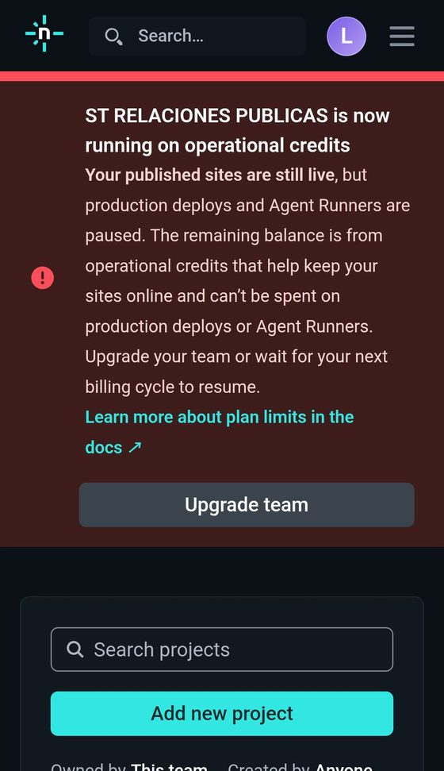
Página o herramienta sin usuarios ni datos guardados (por ejemplo, una calculadora o una página informativa): Cloudflare Pages o Netlify.
Aplicación hecha con un framework como Next.js: Vercel (si es para un negocio, con el plan Pro) o Cloudflare.
Si tiene que guardar datos o tener usuarios, sumá Firebase o Supabase. Los dos tienen base de datos e inicio de sesión con Google.
Las recetas
- Guardar tu proyecto en GitHub
- Publicarlo en Cloudflare
- Conectar tu dominio
- Ingresar con Google (Firebase)
- Una base de datos segura en Supabase
Guardar tu proyecto en GitHub
- Una cuenta en github.com (gratis)
- Tu proyecto
- Claude Code o Codex
- Creá tu cuenta en github.com.
- Pedile a Claude Code o a Codex que suba el proyecto. Usá el prompt de abajo: antes de subir, revisa que no haya claves ni datos personales.
- Cada vez que termines un cambio que funciona, pedile: “Guardá los cambios en GitHub con un mensaje que explique qué cambió”. Es tu punto de control para volver atrás.
Salió bien si entrás a github.com, abrís tu repositorio y ves tus archivos.
Si falla: si te pide permisos o un inicio de sesión que no entendés, pedile a la IA que te explique cada paso antes de aceptar.
Publicarlo en Cloudflare
- Una cuenta en Cloudflare (gratis)
- Tu proyecto en GitHub
- Saber en qué carpeta está el sitio
- Entrá a dash.cloudflare.com, buscá Workers & Pages y tocá Create.
- Para un sitio como esta guía, tocá Continue to Pages, al pie. Conectá GitHub y elegí tu repositorio.
- Completá la configuración. Framework preset: None, si es HTML. Build command: vacío. Build output directory: la carpeta donde está el archivo
index.html. Las mayúsculas cuentan. - Tocá Save and Deploy. Si aparece Build failed, abrí el registro: ahí dice qué pasó.
- Cuando termina, tu sitio queda en una dirección terminada en
.pages.dev. Desde ahí, cada cambio que guardes en GitHub se publica solo.
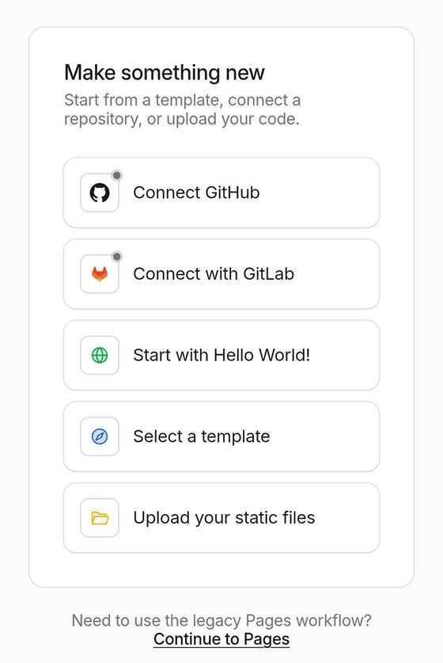
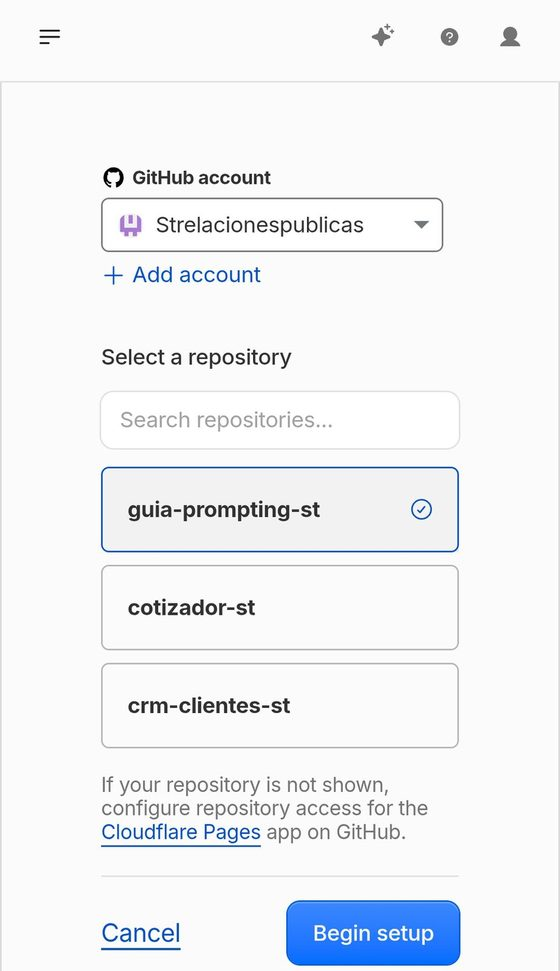
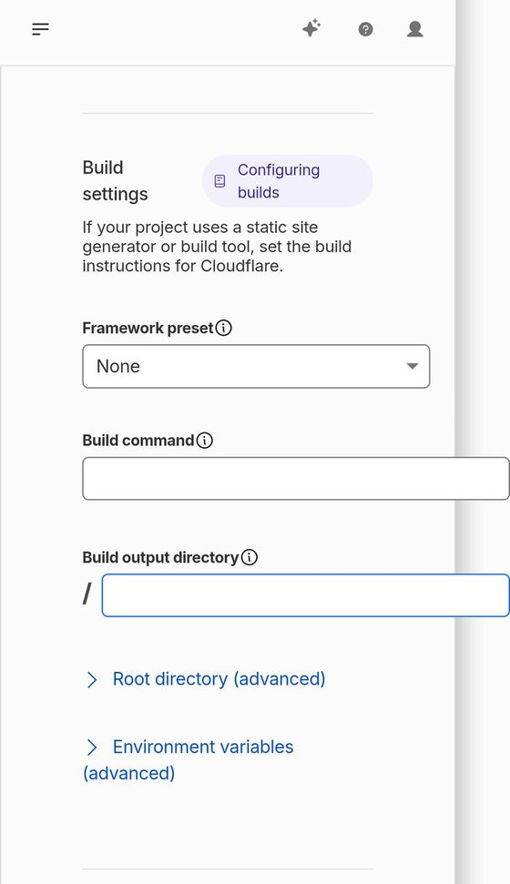
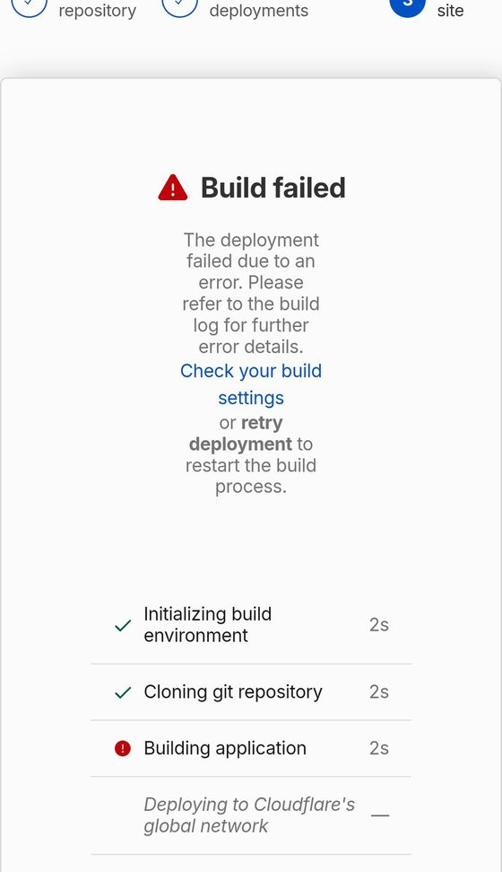
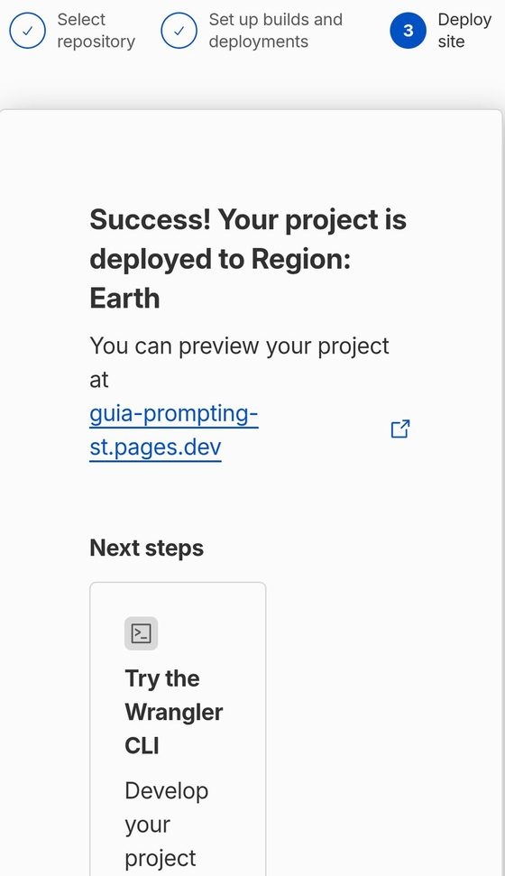
Si tu proyecto es una aplicación (por ejemplo, hecha con Next.js), la configuración cambia. Pedile a la IA la configuración exacta para tu caso.
Salió bien si abrís la dirección .pages.dev en una ventana de incógnito y ves tu sitio.
Si falla: mirá el registro de la publicación y usá el caso 8 del Anexo E.
Conectar tu dominio
- Un dominio propio, por ejemplo tunegocio.com.ar
- Acceso al panel donde se administra su DNS (Hostinger, NIC Argentina u otro)
- Tu proyecto publicado
- En tu proyecto de Cloudflare, entrá a Custom domains y escribí la dirección que querés usar. Puede ser el dominio o un subdominio, como
guia.tunegocio.com.ar. - Si el DNS de tu dominio está en otro proveedor, elegí My DNS provider.
- Cloudflare te da dos datos: Name (por ejemplo,
guia) y Target (tu dirección.pages.dev). - En el panel de tu proveedor, entrá a DNS y agregá un registro tipo CNAME con esos dos datos.
- Volvé a Cloudflare y tocá Check DNS records. El cambio puede tardar hasta 24 horas en verse en todos lados.
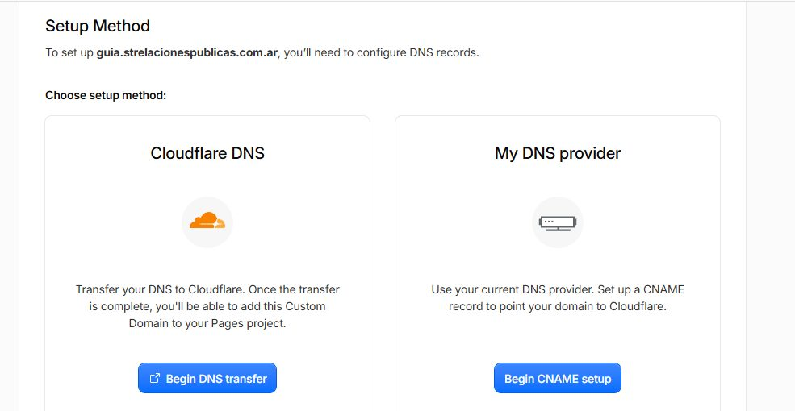
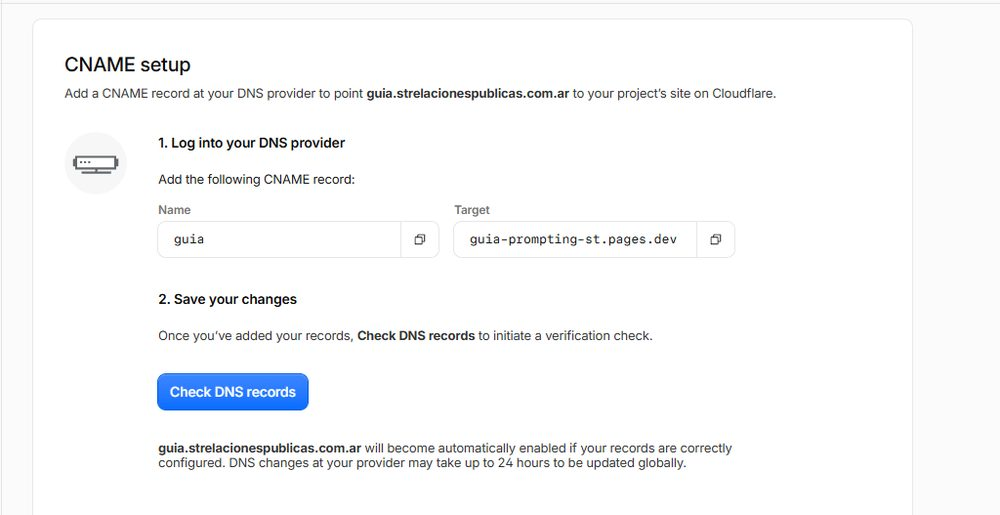
Nos pasó: el panel de dominios de Hostinger aparecía vacío, porque los .com.ar se registran en NIC Argentina. El registro lo terminamos creando con el asistente de Hostinger.
Salió bien si escribís tu dirección en el navegador y aparece tu sitio, con el candado de conexión segura.
Si falla: revisá que el nombre y el destino estén copiados exactos, sin espacios, y esperá unas horas antes de volver a probar.
Ingresar con Google (Firebase)
- Un proyecto en console.firebase.google.com (gratis)
- Tu dominio o tu dirección .pages.dev
- Creá un proyecto en Firebase y registrá una app web. Firebase te da una configuración que se le pasa a la IA para conectar tu sitio. No es secreta: lo que protege los datos son las reglas del paso 5.
- Entrá a Authentication, después a Sign-in method, y activá Google.
- En Authentication, Configuración, Dominios autorizados: agregá tu dominio y tu dirección
.pages.dev. Sin este paso, el ingreso no funciona en el sitio publicado. - Pedile a la IA que conecte el botón “Ingresar con Google” usando esa configuración.
- Pedile también las reglas de seguridad de la base de datos, para que cada persona vea solo lo suyo. Revisalas y pegalas en Firestore, en la pestaña Reglas.
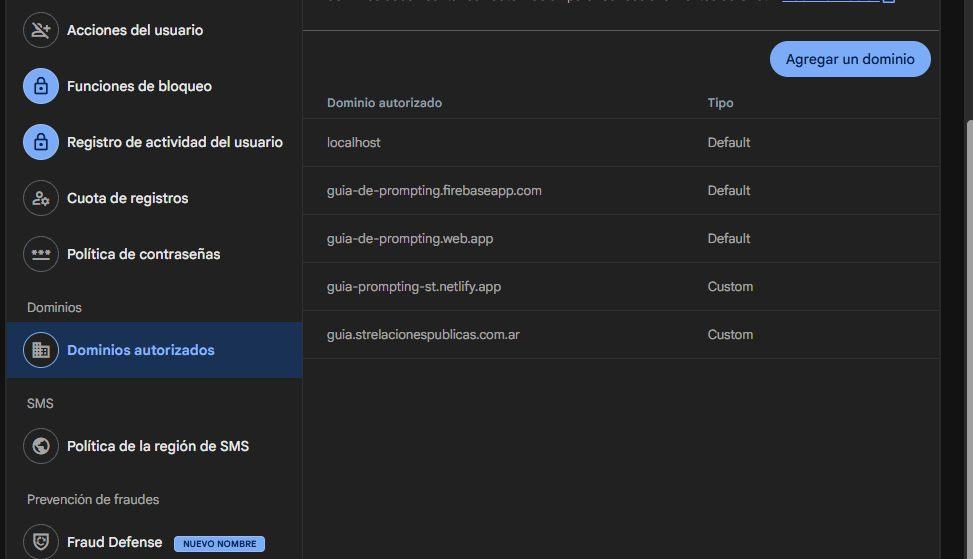
Salió bien si ingresás con Google desde tu sitio publicado, en una ventana de incógnito, y en otra cuenta no ves los datos de la primera.
Si falla: si aparece un error de “dominio no autorizado”, faltó el paso 3. Si entrás desde Instagram o WhatsApp, abrí el enlace en Chrome o Safari.
Una base de datos segura en Supabase
- Una cuenta en supabase.com (gratis)
- La lista de datos que vas a guardar (etapa 3 del Anexo D)
- Creá un proyecto. Supabase te pide una contraseña para la base: guardala en un lugar seguro y no la pegues en el chat.
- Creá las tablas. Podés pedirle a la IA el código SQL y pegarlo en el SQL Editor.
- En cada tabla, activá RLS (Row Level Security): sin eso, cualquiera que tenga la dirección del proyecto puede leer, cambiar o borrar los datos.
- Creá las políticas: quién puede leer y quién puede escribir. Por ejemplo, “cualquiera puede ver el directorio; solo cada persona edita su ficha”.
- De las claves que te da Supabase, en el sitio va solo la pública (anon o publishable). La secreta (service_role o secret) nunca va en el sitio ni en el chat.
A uno de nuestros proyectos le llegó un correo de Supabase: una tabla estaba pública, sin reglas. Quería decir que cualquiera con la dirección podía modificar o borrar datos. La solución es la de los pasos 3 y 4.
Otro correo avisó que el proyecto se iba a pausar por falta de uso. En el plan gratuito pasa; se reactiva desde el panel. Leé siempre los correos de estos servicios.
Salió bien si en el panel, todas tus tablas muestran RLS activado y probaste, sin iniciar sesión, que no podés cambiar datos de otra persona.
Si falla: pedile a la IA que revise las políticas con el prompt de seguridad de la etapa 10 del Anexo D.
Completalo para tu proyecto. Si alguna respuesta es “no sé”, ese es tu próximo paso.
Glosario básico
| Prompt | Instrucción que le das a la IA. |
| Contexto | Información sobre tu negocio y tu proyecto que la IA necesita para responder bien. |
| Requisito | Algo que la herramienta debe hacer o cumplir. |
| Especificación funcional | Documento que describe qué hace la herramienta, para quién y con qué reglas, sin entrar en el código. |
| Regla de negocio | Condición propia de tu actividad que el sistema debe respetar. Ej.: “no se aceptan reservas con menos de 2 horas de anticipación”. |
| Validación | Comprobación automática de que un dato es correcto antes de guardarlo. |
| Servidor | Computadora remota donde funciona la herramienta y se guardan los datos. Las validaciones importantes deben hacerse ahí, no solo en la pantalla del usuario. |
| Base de datos | Lugar ordenado donde se guarda la información. Parecida a una planilla, pero preparada para muchos usuarios y reglas. |
| Integración | Conexión entre dos herramientas para que intercambien información. |
| Criterio de aceptación | Condición verificable que indica que una función está lista. |
| Token | Fragmento de texto que la IA procesa. Se relaciona con límites de uso o costos. |
| Variable de entorno | Valor de configuración (como una clave de acceso) que se guarda fuera del código para protegerlo. |
| Producción | La versión de la herramienta que usan personas reales con datos reales. |
| Copia de respaldo | Copia de los datos que permite recuperarlos si algo falla. |
| Skill | Paquete de instrucciones, ejemplos y recursos que orienta a la IA para hacer una tarea especializada, como revisar accesibilidad o escribir con tu tono. Ver capítulo 10 y Anexo F. |
| Maqueta | Versión visual de una herramienta: se ve cómo va a ser, pero no guarda nada. Sirve para mostrar y decidir. |
| Prototipo | Versión que se puede recorrer y probar, aunque falten partes o use datos de ejemplo. No sirve todavía para uso real. |
| Aplicación funcional | Herramienta que guarda los datos de verdad, aplica sus reglas en el servidor y pasó las pruebas definidas. |
| Repositorio | Lugar donde se guarda el código de un proyecto con todo su historial de cambios. GitHub es el más usado. |
| Commit | Punto de guardado en el repositorio. Permite volver a una versión anterior que funcionaba. |
| Alojamiento (hosting) | Servicio donde vive tu herramienta en internet, para que la gente pueda entrar. Ejemplos: Cloudflare, Netlify, Vercel. |
| Dominio | La dirección de tu sitio, como tunegocio.com.ar. Los .ar se registran en NIC Argentina. |
| DNS | Configuración que hace que tu dominio lleve al alojamiento correcto. Un registro CNAME es una de esas indicaciones. |
| Publicar (deploy) | Subir una versión de la herramienta al alojamiento para que quede disponible en internet. |
| Inicio de sesión (autenticación) | Forma de comprobar quién es cada persona antes de dejarla entrar, por ejemplo con “Ingresar con Google”. |
| Reglas de acceso (RLS) | Reglas de la base de datos que definen quién puede leer y quién puede modificar cada dato. Sin ellas, los datos pueden quedar abiertos a cualquiera. |
| Agente proactivo | IA que trabaja por su cuenta en segundo plano: revisa tus aplicaciones, avisa lo que necesita atención y propone acciones. Tendría que pedirte permiso antes de actuar en tu nombre. Ver capítulo 7. |
Pensar antes de pedir. Documentar antes de construir. Validar antes de publicar.